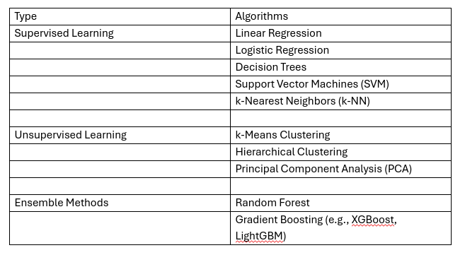
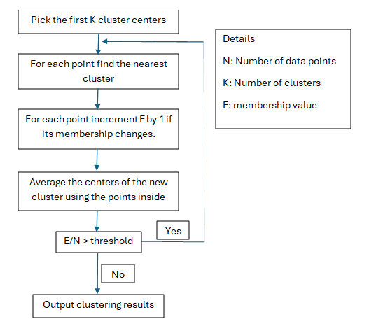
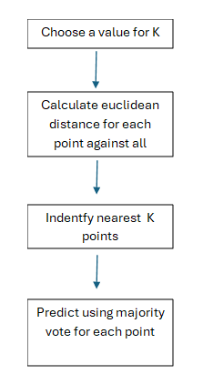
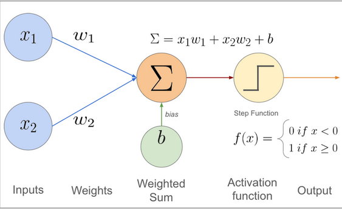
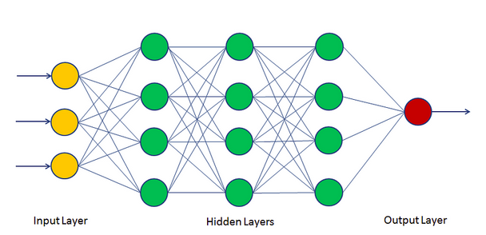
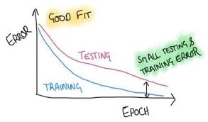
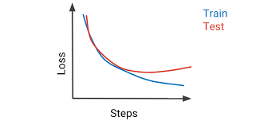
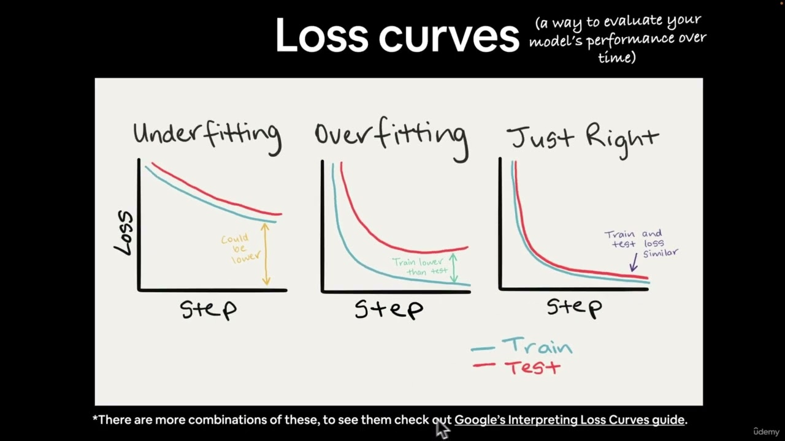
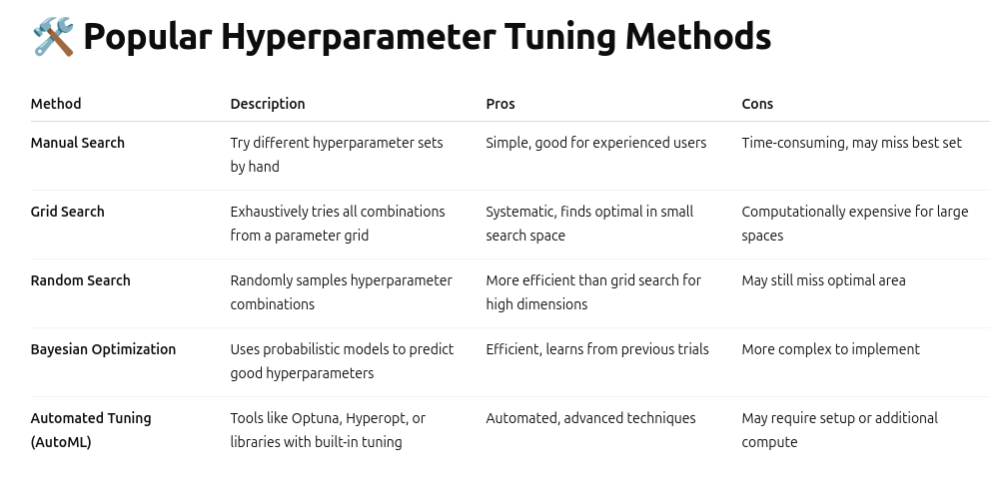
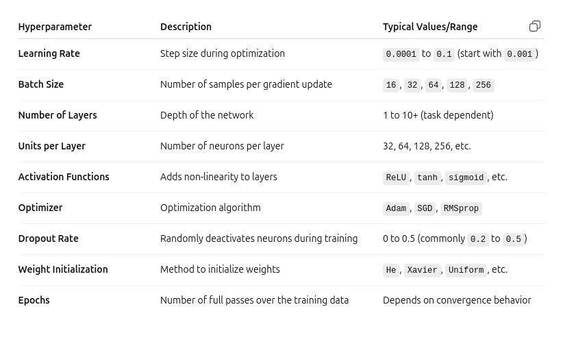

Content from Working Example
Last updated on 2025-07-06 | Edit this page
Estimated time: 70 minutes
Overview
Questions
- What can a typical machine learning project look like from start to finish?
- How can I approach solving a problem with machine learning in Python?
Objectives
- Understand the core structure and key stages of a machine learning project
- Run through a complete worked example, from data to evaluation
- Begin exploring how to design your own ML solution for a problem in your domain
Time to Dive Right In
We’re going to jump straight into the deep end by running a worked example that you’ve already set up during the summary and installation steps. Don’t worry if you don’t understand everything right away — that’s completely normal. This first run-through is meant to give you a high-level sense of how all the pieces fit together.
Throughout the week, we’ll break down each stage of this process in detail, so by the end you’ll have a solid understanding of each part. As you go through this example, try and think about how these steps might apply to your own data.
Note: For transparency, all scenarios in these lessons are entirely fictional and not intended to represent real-world data or fieldwork.
Scenario: Pick a Penguin üêß
A team of marine biologists working in Antarctica is keen to identify penguin species, as the balance between these species is a crucial indicator of climate change and the overall health of marine ecosystems. However, capturing penguins to determine their species is both costly and disruptive to wildlife.
To minimize costs and reduce disturbance, they are exploring whether remote camera stations equipped with automated detection algorithms could monitor and track penguin colonies without close contact or physical handling. As a first step, they want to evaluate how reliably species can be classified based on observable features alone.
They have already assembled a dataset containing individual penguins with known species labels, along with various characteristics such as the island where each was found, bill length and depth, flipper length, body mass, and sex.
Because they collected the data themselves, they are highly confident in its overall quality and content. However, the data for the island variable has been corrupted due to an unknown processing error, so it will need to be removed from the analysis.

Guide to Penguins, NatGeoUK_Expeditions
Based on this dataset, they want to explore the following question:
Your task
We’ll use this scenario to walk through the typical stages of a machine learning project. Now that we’ve defined the problem, here are the next steps on our journey:
- Import the data: Load the penguin dataset into our environment.
- Explore the data: Understand its structure, look for patterns, and identify any missing or unusual values.
- Preprocess the data: Clean and transform the data so it’s ready for modeling.
- Select a model: Choose an algorithm to predict species based on the available features.
- Train and test: Split the data to train the model and evaluate how well it performs on new data.
- Evaluate results: Measure the model’s accuracy and see which features are most influential in distinguishing penguin species.
Import Libraries
If you attended the Python introduction session, some of this code should look familiar. We’ll start by importing the libraries we need and then loading our dataset so we can begin exploring it.
PYTHON
# import the libraries we intend to use
import pandas as pd
import matplotlib.pyplot as plt
from sklearn.model_selection import train_test_split
from sklearn.preprocessing import LabelEncoder
from sklearn.tree import DecisionTreeClassifier, plot_tree
from sklearn.metrics import confusion_matrix, ConfusionMatrixDisplayInspect the Data
Before doing anything else, we want to understand what our data looks like. We’ll start by inspecting the first 10 rows and checking the shape of the table to see how many rows (records of penguins) and how many columns (features) it contains.
OUTPUT
species island bill_length_mm ... flipper_length_mm body_mass_g sex
0 Adelie Torgersen 39.1 ... 181.0 3750.0 Male
1 Adelie Torgersen 39.5 ... 186.0 3800.0 Female
2 Adelie Torgersen 40.3 ... 195.0 3250.0 Female
3 Adelie Torgersen NaN ... NaN NaN NaN
4 Adelie Torgersen 36.7 ... 193.0 3450.0 Female
5 Adelie Torgersen 39.3 ... 190.0 3650.0 Male
6 Adelie Torgersen 38.9 ... 181.0 3625.0 Female
7 Adelie Torgersen 39.2 ... 195.0 4675.0 Male
8 Adelie Torgersen 34.1 ... 193.0 3475.0 NaN
9 Adelie Torgersen 42.0 ... 190.0 4250.0 NaN
[10 rows x 7 columns]OUTPUT
(344, 7)We can see that there are some missing values (NaN) in the dataset. Overall, the data includes 334 rows and 7 columns. Before we check that the contents match what we expect, we’ll remove the island column since we’ve been told this data is corrupted.
PYTHON
#drop island due to the processing error
df_peng = df_peng.drop("island", axis=1)
# check species column is as expected
print('species::', df_peng['species'].unique())OUTPUT
species:: ['Adelie' 'Chinstrap' 'Gentoo']OUTPUT
column headers: Index(['species', 'bill_length_mm', 'bill_depth_mm', 'flipper_length_mm',
'body_mass_g', 'sex'],

dtype='object')We can see that the dataset contains the expected species and features (now without the island column). Next, we’ll focus on the columns with numeric values and visualize their distributions to check for any outliers.
PYTHON
# Which features are we able to visualise distribution?
distribution_features = ['bill_length_mm', 'bill_depth_mm', 'flipper_length_mm', 'body_mass_g']
plt.figure(figsize=(12, 8))
# enumerate gives us a numeric value as well as our feature during our loop
for i, feature in enumerate(distribution_features, 1): #starting from 1 in our numeric loop
# plot position
plt.subplot(2, 2, i)
#create a histogram from our feature with 10 bins
df_peng[feature].hist(bins=10)
# add axis labels
plt.xlabel(feature)
plt.ylabel('Count')
plt.tight_layout()
plt.show()
We don’t see any suspicious values, which is a good sign, but we still need to investigate the missing values we identified earlier.
OUTPUT
species 0
bill_length_mm 2
bill_depth_mm 2
flipper_length_mm 2
body_mass_g 2
sex 11
dtype: int64OUTPUT
species 0.000000
bill_length_mm 0.581395
bill_depth_mm 0.581395
flipper_length_mm 0.581395
body_mass_g 0.581395
sex 3.197674
dtype: float64We can see that there are only minimal missing values in the dataset, with the highest being in the sex column, where just over 3% of the data is missing.
Preprocessing
To keep things simple, we’ll remove any rows that contain missing values. This approach may be a little niave, but we’ll explore more sophisticated options later in the week.
PYTHON
#Pre-processing - to 'fix' we remove any rows that have NaN values
#check shape before removal
print('Pre cleaning shape:', df_peng.shape)OUTPUT
Pre cleaning shape: (344, 6)PYTHON
# drop all rows that have NaN values
df_peng_clean = df_peng.dropna()
#check shape after removal
print('Post cleaning shape:', df_peng_clean.shape)OUTPUT
Post cleaning shape: (333, 6)OUTPUT
species bill_length_mm ... body_mass_g sex
0 Adelie 39.1 ... 3750.0 Male
1 Adelie 39.5 ... 3800.0 Female
2 Adelie 40.3 ... 3250.0 Female
4 Adelie 36.7 ... 3450.0 Female
5 Adelie 39.3 ... 3650.0 Male
6 Adelie 38.9 ... 3625.0 Female
7 Adelie 39.2 ... 4675.0 Male
12 Adelie 41.1 ... 3200.0 Female
13 Adelie 38.6 ... 3800.0 Male
14 Adelie 34.6 ... 4400.0 Male
[10 rows x 6 columns]We split the dataset into two separate components:
features (X) and labels
(y). The features (X) include all the measured
characteristics of each penguin that will be used as input to the

machine learning model, such as bill dimensions, flipper length, body

mass, and encoded sex. The labels (y) consist solely of the
species column, which represents the target variable we
want our model to predict.
PYTHON
# split the features and labeled data
# features
X = df_peng_clean.drop("species", axis=1)
# label
y = df_peng_clean["species"]We now need to convert the sex column from its
categorical values into a numeric format to make it suitable for machine

learning models. Most models require all input features to be

represented as numbers, so this transformation ensures that the

sex information can be interpreted during training and
prediction.
Training & Test split
We split our data into two parts: 80% for training the
model and 20% for testing how well it performs on new,
unseen data. The random_state ensures we get the
same split each time we run the code, making results reproducible.
Model Selection & Training
We select a decision tree as our initial baseline model because it provides a high level of interpretability and explainability. In our problem definition, we stated that beyond predicting penguin species, we also want to understand which features are important for making those predictions.
A decision tree naturally reveals this by showing us the sequence of decisions (feature splits) it makes, along with the thresholds it uses. This makes it easy to see, for example, whether flipper length or bill depth is more influential in classifying the species. As a result, using a decision tree helps us both establish a benchmark for predictive accuracy and gain direct insights into the factors driving our classifications.
PYTHON
#Generate a decision tree classifier, max depth of 2 means maximum 2 checks to split the data
clf = DecisionTreeClassifier(random_state=0, max_depth=2)
# train the model on our training data
clf.fit(X_train, y_train)DecisionTreeClassifier(max_depth=2, random_state=0)In a Jupyter environment, please rerun this cell to show the HTML representation or trust the notebook.
On GitHub, the HTML representation is unable to render, please try loading this page with nbviewer.org.
Parameters
| criterion  | 'gini' | |
| splitter  | 'best' | |
| max_depth  | 2 | |
| min_samples_split  | 2 | |
| min_samples_leaf  | 1 | |
| min_weight_fraction_leaf  | 0.0 | |
| max_features  | None | |
| random_state  | 0 | |
| max_leaf_nodes  | None | |
| min_impurity_decrease  | 0.0 | |
| class_weight  | None | |
| ccp_alpha  | 0.0 | |
| monotonic_cst  | None |
Results and Evaluation
We use our trained decision tree to predict the species of the penguins in our test set, which represents data the model has never seen before. This helps us evaluate how well the model generalizes to new examples.
To see how accurately it performs across each species, we display the results as a confusion matrix. This highlights where the model makes correct predictions and where it confuses one species for another.
Finally, we visualize the decision tree itself. This reveals the exact sequence of decisions the model makes, which features it finds most important, and the specific thresholds it uses to classify penguins into different species.
PYTHON
# Predict the species of the test set (unseen data) using the model we have created
y_pred = clf.predict(X_test)
# Display results as a confusion matrix
cm = confusion_matrix(y_test, y_pred, labels=clf.classes_)
cm_display = ConfusionMatrixDisplay(confusion_matrix=cm, display_labels=clf.classes_)
cm_display.plot(cmap="Blues", colorbar=False)OUTPUT
<sklearn.metrics._plot.confusion_matrix.ConfusionMatrixDisplay object at 0x000001B63C9D98D0>PYTHON
# Visualise the decision tree
plt.figure(figsize=(14, 7))
plot_tree(clf, feature_names=X.columns, class_names=clf.classes_, filled=True)
plt.title('Confusion Matrix')
plt.show()

Conclusion
In this worked example, we followed a machine learning workflow from start to finish. We built a decision tree classifier to predict penguin species based on physical measurements. This not only gave us a baseline for predictive accuracy, but also provided clear insight into which features the model found most important for distinguishing between species.
As we discussed this approach was overly simple but as we progress through the week, we’ll dive deeper into each of these stages, explore more sophisticated methods.
Key Points
- A typical machine learning project follows a structured pipeline: data exploration, cleaning, preprocessing, model selection, training, and evaluation.
- Even simple models like decision trees can provide valuable insights into which features drive predictions, making them excellent for building intuition and explainability.
- Don’t worry if you didn’t follow every detail. Remember, this was about gaining a high-level overview of the entire process, so that when we dive into each section in detail later, you’ll have the context to understand how it all fits together.
Content from Problem Definition
Last updated on 2025-07-05 | Edit this page
Estimated time: 120 minutes
Overview
Questions
- How can I determine what type of problem my data is suited for?
- How do I know what is an appropriate question for a machine learning model to answer?
- How can I clearly define a machine learning problem?
Objectives
- Articulate a clear and measurable AI/ML problem definition
- Identify whether a task is supervised or unsupervised
- Distinguish between classification and regression tasks
- Distinguish between clustering and dimensionality reduction tasks
- Use appropriate machine learning terms when framing a problem
Introduction
In the previous session, we explored (and ideally ran) a working example of a machine learning (ML) project. This provided a sense of what ML can do and the typical stages involved in building, training and evaluating a ML model.
Now, we take a step back and ask: how do we get to that point?
Before we can build a solution, we need to define the problem. That means deciding what we want ML to achieve. Ideally, we want to harness tasks that computers are exceptionally good at, such as spotting patterns in massive datasets, performing millions of calculations quickly, or consistently applying the same rules without fatigue.
However, computers (and ML) are not good at everything. They struggle with tasks requiring common sense, deep contextual understanding, or handling messy, ambiguous problems without clear definitions.
Just because computers can do things human can’t doesn’t mean they can do things human’s find simple; this distinction is not always obvious if you’re just starting out.

“Tasks” by Randall Munroe, xkcd.com/1425, used under CC BY-NC
2.5.
For example:
You could ask your phone to detect duplicate photos in your gallery, even if they’re slightly resized or compressed — a task that could take a person days to do accurately by eye (computers are great at precise, large-scale comparisons, humans not so much).
But to asking your phone to pick out the photo that best captures the mood of a family gathering, becomes almost impossible for a computer as without complex definition and training it has no natural sense of emotional relevance in photos (intuitive for humans, baffling for machines).
So part of defining your ML problem is figuring out whether it plays to these computational strengths, or whether it risks tackling something machines are fundamentally ill-suited to handle.
A good starting point is accurately defining the problem. We can begin by asking…
How Can We Articulate the Problem?
A well-structured ML problem should be:
- Clear: The question should use precise, unambiguous language that explicitly defines the objective.
- Measurable: The problem must involve inputs and outputs that are well-defined, observable, and quantifiable.
- Feasible: The required data should exist (or be collectible), be accessible, and be sufficient in both quality and quantity.
- Appropriate: The question should align with the kinds of problems ML can solve, typically involving prediction, classification, or pattern recognition.
- Ethically Responsible: The question should avoid discriminatory inputs and must not reinforce bias or result in harm.
This is not an exhaustive checklist. Other factors, such as the scope, reproducibility, or specific project priorities, may also be important. If you’re unsure, don’t hesitate to ask for guidance.
We can consider some examples to better understand why these factors are important.
“Can we use AI to look at diseases in crops?”
- The task is vague – “look at” doesn’t describe a specific ML
task.
- “Diseases in crops” is broad – which disease? which crops?
- It’s difficult to interpret and action meaningfully.
- This isn’t a bad ‘starting place’ just a bad ‘finishing place’
-“Can we predict the presence of leaf rust in wheat crops using drone image data?”
Why it’s better:
- Specifies the task: predict the presence of a disease.
- Identifies a specific disease (leaf rust) and crop
(wheat).
- Defines the data source (drone image data).
- These elements narrow the focus, resulting in a much clearer

objective.
“Can we predict how bad a patient’s tumour is?”
- “bad” does not have a precisely defined range
- If the output lacks consistent, measurable categories then it is unsuitable for model training
- “Can we classify tumour types from MRI scans (benign vs malignant)?”
Why it’s better:
- Defines a binary, clearly labelled classification task.
- Uses structured input data (MRI scans).
- Aligns with typical medical data used in supervised learning.
“Can we predict oak tree health from the tree’s number of green vs non-green leaves?”
- Leaf colour counts are difficult to collect consistently at scale.
- What about leaves that are half green? or yellowy-green?
- Assumes the existence of data that may be unreliable, unavailable or
volatile.
- No indication of how the data would be collected or validated.
- “Can we predict oak tree health from labelled phenotypic data collected by forestry personnel?”
Why it’s better:
- Relies on structured, expert-collected phenotypic data
- Improves feasibility through realistic data access
- More likely to meet the quality and quantity needs of ML
“Can AI determine which music is the best?”
- “Best” is subjective and lacks a ground truth label
- The question is not suitable for objective modelling with ML
- “Can our model recommend new music based on a user’s preferences using track features such as tempo and key?”
Why it’s better:
- Uses measurable inputs (e.g., tempo, key) and labelled

preferences
- Frames the task as a recommendation problem, which aligns well with

ML
- Avoids subjectivity by focusing on data-driven feedback
“Can we stream children into sets based on their predicted academic ability using their postcode?”
- While technically feasible, this raises serious ethical
concerns
- Postcode is a proxy for socioeconomic status and may encode
structural bias
- Using it could reinforce inequality or lead to discriminatory decisions
- “Can we identify regions where additional educational resources are most needed?”
Why it’s better:
- Shifts focus from labelling an individual to supporting a

community
- Frames the task in a socially constructive way
- Avoids using sensitive features that could propagate bias
Be mindfull
These are the kinds of considerations you need to make when defining your problem. One important thing to keep in mind…
⚠️ “Just because you can, doesn’t mean you should”
One of the most important, and often overlooked, questions in ML
is:
Who or what is this model helping?
Technical feasibility is only one part of the equation. Responsible AI begins with responsible questions. AI is a tool, how we use it is up to us.
üìù Breakout Task: Reflect on Your Problem Definition
- Discuss with those around you:
- What does your problem definition look like at this point?
- Have you adjusted or refined it since starting this session?
- Is there anything new you might need to consider (e.g., clearer objectives, feasibility, ethical implications etc.)?
- What does your problem definition look like at this point?
Be prepared to share one insight or question with the group.
Considering Data Format
We are moving on to understanding your data and the first thing to consider is how your data is stored and structured? Understanding your data’s format early helps avoid surprises (like trying to feed raw text into a model that expects numerical arrays).
The format of your data has a big impact on:
- How you load it into your analysis environment
- What kind of preprocessing you’ll need
- Which libraries or ML tools are appropriate
- How computationally demanding your pipeline might be
üìö Common data formats
| Data Format | Examples | Typical considerations |
|---|---|---|
| Tabular | CSV, Excel | Check column consistency, delimiters, missing data |
| Free text | Surveys, articles, tweets | Requires cleaning: tokenisation, stopwords removal |
| Images | JPEG, PNG, TIFF | Resize, normalise, convert to arrays |
üìù Breakout Task: Quick questions to understand your data format
- Is your data tabular, text, images, or something else?
- How will you load it?
- Does it require special libraries or custom parsing?
- What does one data point look like?
- Does it need modifying before analysis?
The Data in Context
Now that we have begun to understand what makes a good machine learning question, we must ensure that our data aligns with that question. A model’s performance often suffers not due to algorithm choice, but because of a mismatch between the question being asked and the data being used to answer it.

“Best Selling Product” by Piotr Kononow, dataedo.com/cartoon/best-selling-product,
used under CC
BY-NC 2.5.
üí° ‚ÄúUnderstand Your Data, or Misunderstand Your Results‚Äù
- The better we understand our dataset, the more confidently we can select and apply the appropriate ML approach.
This includes knowing where the data came from, why it was collected, how it was gathered, and what its limitations are.
Not all datasets are created equal. The origins and context of your data strongly influence what kinds of approaches you can take.
“But wait… there is nothing I can change about my data now?”
⚠️ “Overlook the Context, Inherit the Consequences”
In many real-world scenarios we begin with data that has already been collected, often for a different purpose than the one we now intend to explore.
Ideally, we might design a data collection process tailored to our machine learning goals. But in practice, we are often working retrospectively, trying to understand what can be discovered from the data we already have, without the option to amend, expand, or recollect it.
If you are generating synthetic data or designing a future collection process, you’ll have more control. But for the purpose of this session, we assume:
It’s true that the data is fixed.
It has already been collected, and we cannot influence how, why, or from whom it was gathered. However, this context has significant implications for the entire machine learning process, as it shapes what can be modelled, how results should be interpreted, and where caution must be applied.
Key Questions to Ask About Your Data
These questions build directly on our earlier criteria for good problem formulation. They help you assess how the origin and structure of your data may shape what you can realistically model.
- Was it you, your team, or a third party?
- If external: Is the source reputable (e.g., academic, government, commercial)?
- Is the collector contactable?
The more we know about who collected the data, the more we can judge how trustworthy and appropriate it is for our task.
- Was it gathered via surveys, sensors, web scraping, manual input, or experiments?
- Was the process automated or did it rely on subjective human judgment?
- Are there known issues such as selection bias or noise?
The collection method shapes the reliability, completeness, and consistency of your dataset.
- Was it collected for scientific research, business operations, legal compliance, or another reason?
- Was it designed to answer the question you’re asking, or are you repurposing it?
The original purpose influences how well the data matches your intended ML task.
- Is the data recent and representative of current conditions?
- Could location or time-specific events affect its generalisability?
For example, a model trained on pre-COVID mobility data may not reflect current behaviours.
- Is there meta data explaining the columns and values?
- Are the units, formats, and variable names clearly defined?
- Is the treatment of missing values transparent?
Good documentation reduces the risk of misinterpretation and helps support your pre-processing steps.
Examples of how Data Context Shapes ML Pipeline Decisions
Scenario 1: You have been given a large dataset on customers eating habits collected as part of a health food company’s loyalty card programme.
- The data mainly represents customers already interested in buying healthy products.
- It may not generalise to the broader population’s eating habits.
- Restrict your analysis to questions about this customer group.
- Clearly note the demographic limitation in any reports.
- If recorded in the data you could inspect the demographic to better understand the participant makeup.
Scenario 2: You’re given a series of air quality readings from low-cost sensors mounted onto city buses.
- The data is biased towards higher pollution hotspots, missing residential areas or parks.
- Could misrepresent overall city air quality.
- How reliable are the sensors?
- Frame your project around high-traffic pollution monitoring, not general air quality.
- Use this data to identify peak exposure zones for traffic planners, rather than claiming citywide averages.
- Could be combined with bus routes to understand the data better.
- Can you find documentation reporting the error range of the sensors?
Scenario 3: You’re analysing water consumption data from a chain of hotels, you discover the data was all collected between May and September.
- It may reflect heavy tourist usage, not typical yearly demand.
- Are the hotels in hot climates? Are they refilling their pools?
- Use the data to study peak scenarios.
- Avoid generalising to average annual water needs unless you can adjust using known seasonal factors.
Scenario 4: You receive a weather dataset and the columns named
Rate, ‘rate2’, Wind, Temp… with
no clear documentation, you believe you can deduce their meaning from

the context of the dataset.
- You might misinterpret what these columns mean — e.g. thinking
rateis a rate of increase when it is a rate of decrease. - Data could be redundant (duplication) which is difficult to confirm if you don’t understand the columns.
- Conduct exploratory analysis to check plausible ranges (e.g. your data is for a weather station in Aberystwyth and ‘temp’ rarely goes above 20 and has never gone above 35, probably safe to assum it is in Celsius).
- Cross-reference any example records or outputs you can find.
- Document all working assumptions
- Speak to the collectors (if possible)
üìù Breakout Task: Consider your data‚Äôs context
- With the people around you, discuss:
- Who collected your data, and why?
- How was it collected — and could that process introduce bias or gaps?
- When and where was it gathered — does that affect how generalisable it is?
- Is the documentation clear, or do you have questions about what columns mean?
- If none of these risks are relevant, why not? and are there any risks that are?
Try to identify at least one risk or limitation in your data’s context that might influence your machine learning pipeline (e.g., needing extra cleaning, restricting your conclusions, or choosing fairness-aware metrics).
Be ready to share your observations.
Framing your Problem
Next it is a good idea to frame our question. This means working out exactly what kind of machine learning problem we’re trying to solve so we can communicate it clearly, both to ourselves and to others who understand ML.
üïí Terminology Time
Let’s start with two important terms in machine learning:
Features
Features are the individual pieces of information that you use to help make predictions. They are the inputs to your model.
Examples:
- The length and width of flower petals
- A person’s age, height, and cholesterol level
- A pixel value
But wait… what if I don’t have labels in my dataset?
That’s fine, this is a critical question that will start to shape your entire project.
Supervised and Unsupervised Learning.
Before we choose an algorithm, we need to answer:
“Are we dealing with supervised or unsupervised learning?”
 .
.
Supervised Learning
You already have the answers (the labels). The goal is to teach the model to predict the correct label given new data.
Example: - A botanist has recorded the length and
width of flower petals and also classified each flower’s species.
- Your question: Can we predict the species of flower based on petal
length and width?
Supervised learning is used when:
- You have data that includes both inputs (features) and known outputs (labels).
- You want to see how well you can predict a known outcome from the inputs.
Unsupervised Learning
You do not have labels. The goal here is to explore your data and uncover hidden patterns or groupings.
Example: - You measured the length and width of many
flower petals from a region, but don’t know their species.
- Your question: Can we find natural groupings (clusters) in the
data that might correspond to different flower species?
Unsupervised learning is used when:
- You only have input data (features) and want to discover relationships, structures, or clusters that you didn’t know about beforehand.
üïí Terminology Time
| Label Type | Description | Example Values |
|---|---|---|
| Categorical | Data divided into distinct groups or categories |
['Yes', 'No'] or
['UK', 'France', 'Spain']
|
| Continuous | Numeric data that can take on any value within a range (measurable quantities) |
3.5, 98.6, 12.0,
4.2
|
If we are dealing with supervised learning, the next question is:
“Are our labels describing categories or quantities?”
 .
.
Classification
You want to predict which category something belongs to.
Example: - Given features like flower petal length and width, predict whether the flower is a setosa, versicolor, or virginica.
Classification is used when:
- Your labels are categorical (belonging to distinct groups or classes).
- The task is to assign inputs to discrete categories.
Note:
There are different sub-types of classification (e.g., binary vs multiclass vs multilabel) to describe different kinds of classification.
Regression
You want to predict a numeric value.
Example: - Given petal length, predict the petal width.
Regression is used when:
- Your labels are continuous numerical values.
- The task is to predict quantities that can take on a range of values.
üïí Terminology Time
| Unsupervised Task | Description | Typical Goal |
|---|---|---|
| Clustering | Grouping data points based on similarity (no predefined labels) | Discover hidden groupings or patterns |
| Dimensional Reduction | Simplifying data by reducing the number of features | Visualisation or Understanding |
If we are dealing with unsupervised learning, the next question is:
“Are we trying to group similar things, or reduce complexity?”
 .
.
Clustering
You want to find groups or clusters in your data.
Example: - You analyse a series of petal lengths and widths to determine if there are distinct groups within the data.
Clustering is used when:
- You have unlabelled data.
- You suspect some structure or grouping exists and want the algorithm to discover it for you.
Dimensionality Reduction
You want to simplify your data by reducing the number of features, while preserving important structures or relationships.
Example: - You have 100’s of features about petals you believe they are not all important and you want to reduce the overall number of features.
Dimensionality reduction is used when:
- Your dataset has many features, and you want to:
- Visualise it more easily
- Reduce noise or redundancy
- Speed up future modelling
You can think of it as compressing data to keep the most important patterns.
Challenges
ü¶û Problem Scenario 1
New UK fishing legislation has forced boats to release lobsters under a certain weight. However, weighing lobsters on a boat is costly and cumbersome, so the fishing industry is exploring more efficient ways to gauge lobster weight.
A dataset from a group of marine biologists in Canada includes the length and weight of thousands of lobsters caught along various parts of the coastline. They want to know if this existing data could be used to estimate the weight of a lobster from its length, as length is more easily captured through pre-existing on-board imaging systems.
What type of ML problem is this?
- Supervised or Unsupervised?
- Classification, Regression, Clustering, or Dimensionality

Reduction?
- What are the inputs and outputs?
Also discuss: - What might a clear problem definition look like? - What considerations do we need to give the data?
- ✅ Supervised Learning
- ✅ Regression — because the task is to predict a
continuous numeric output (weight) from an input (length).
-
Inputs (features): lobster length
- Output (label): lobster weight
A clear problem definition could be:
“Can we predict the weight of a lobster based on its length measurements using a regression model trained on historical length-weight data from Canadian lobster populations?”
Data considerations:
- The data comes from Canadian lobsters, so we should check if growth patterns are similar for UK lobsters, or if a local dataset is needed for best accuracy.
- Ensure the data covers the full range of sizes relevant to UK fishing regulations, or risk poor predictions at critical cutoffs.
Challenge
üöú Problem Scenario 2 A group of agricultural researchers have acquired hand written soil data records from several different farms. These logs record moisture, pH, and nutrient levels every week. The researchers hope to discover natural groupings of soil conditions across the region to better target fertilizer treatments.
What type of ML problem is this?
Supervised or Unsupervised?
Classification, Regression, Clustering, or Dimensional Reduction?
What are the inputs and outputs?
Also discuss:
What might a clear problem definition look like?
What considerations do we need to give the data?
✅ Unsupervised Learning
✅ Clustering — because the goal is to uncover natural groupings (clusters) without pre-labelled outcomes.
Inputs (features): sensor measurements (moisture, pH, nutrient levels)
No explicit outputs (labels) since the task is to find structure.
A clear problem definition could be: “Can we identify distinct clusters of soil conditions based on moisture, pH, and nutrient levels to guide targeted fertilizer application?”
Data considerations: Individual farmers may have different standards, leading to inconsistencies or mismatches between data.
Instruments may differ between farms and this may also lead to inconsistencies between data sets.
Applying it to your problem
Challenge
Take some time to think about your own dataset and research question (or a project you hope to start). Try to use what we’ve covered in this session to explore:
What type of ML problem is this?
Supervised or Unsupervised?
Classification, Regression, Clustering, or Dimensionality Reduction?
What are your inputs (features) and outputs (labels), if applicable?
How would you write a clear problem definition?
Are there any data context considerations or ethical risks?
Use this exercise to create the first slide of your slide deck. You will be using your slide to introduce yourself and your problem to the group.
Key Points
- Defining your problem clearly is a critical step in any ML project. A poorly defined question can lead to poor or even meaningless results.
- Machine learning is best suited for tasks that play to computational strengths (e.g., pattern recognition, scale, consistency).
- A good ML problem is clear, measurable, feasible, appropriate for ML, and ethically sound.
- Developing an understanding of the shared vocabulary is essential for clearly categorising and efficiently discussing your problem type.
- The context of your data is crucial for understanding the limitations of your analysis and the conclusions you can reliably draw.
Final note

“Here to Help” by Randall Munroe, xkcd.com/1536, used under CC BY-NC
2.5.
None of this is easy, so try not to get discouraged.
Defining a good ML problem, and understanding your data’s limitations, is challenging work.
Remember, there is no silver bullet, and we’re here to help you navigate it.
Content from Data exploration and Preprocessing
Last updated on 2025-07-08 | Edit this page
Estimated time: 120 minutes
Overview
Questions
- How can I read in data to Pandas?
- How can I access specific sections of my data?
- How does Pandas store data in rows and columns?
- How can I clean up messy data?
- How can I learn more about missing values, distributions and structures in my data?
Objectives
- Know the difference between a Series and a Dataframe
- Know how to use
loc[]to access data - Know how to apply basic data cleaning operations
- Know how to use some more sophisticated Pandas functions to explore and manipulate data
- Know some techniques for preparing your data for machine learning
Introduction
You’ve seen briefly how to use Pandas to read in a data file when we looked at the Penguin data. Real-world datasets are often - usually - nearly always? - quite messy; so much so that data scientists spend the majority of their time organising and cleaning data 1.
We’re going to work with a real dataset from an annual salary survey from the website askamanager.org. Have a look at the website and browse the questions, then read in the data file.
PYTHON
import pandas as pd
# Read the raw salary-survey responses
survey_path = "data/AAM_salary_survey_2025_responses.csv"
survey_data = pd.read_csv(survey_path)A DataFrame contains labelled data. Each row and each column has a label. The labels are stored in an index.
OUTPUT
Index(['Timestamp', 'Age', 'Industry', 'Functional area of job', 'Job title',
'Additional context', 'Annual salary',

'Additional monetary compensation', 'Currency', 'Currency - other',

'Income - additional context', 'Country', 'State', 'City/region',

'Remote or on-site?', 'Unionized?', 'Years of experience',

'Years in field', 'Highest level of education', 'Gender', 'Race',

'Disabled?'],

dtype='object')OUTPUT
Timestamp ... Disabled?
0 4/8/2025 11:01:58 ... Yes
1 4/8/2025 11:02:05 ... No
2 4/8/2025 11:02:26 ... No
3 4/8/2025 11:02:30 ... No
4 4/8/2025 11:02:31 ... No
[5 rows x 22 columns]A DataFrame can contain a mix of data types.
We can see that there’s lots of interesting data in there. Here’s a small list of questions we might want to ask: - What’s the distribution of total income across all jobs? - Do unionised jobs earn more or less than non-unionised? - Does salary go up with age, years of experience, and education level? - Do people earning additional income tend to have higher base salaries?
We’ll work through these, learning some more Pandas and data manipulation skills along the way.
Use DataFrame.dtypes to show the datatypes of each
column
Each column in a DataFrame is a Series. Series contain labelled data too, but a Series can only contain a single data type.
OUTPUT
Timestamp object
Age object
Industry object
Functional area of job object
Job title object
Additional context object
Annual salary int64
Additional monetary compensation float64
Currency object
Currency - other object
Income - additional context object
Country object
State object
City/region object
Remote or on-site? object
Unionized? object
Years of experience object
Years in field object
Highest level of education object
Gender object
Race object
Disabled? object
dtype: objectPandas will try to work out what this should be, but sometimes does a
bad job. When it has a mixture of strings and numbers, it picks the most

generic type possible, which is object.
Select a value by its index label using loc[]
Note that the list of datatypes above is itself a Series! The index
labels are the column headings from survey_results, and the
values are the data types. We can pull out a single value with a label

from this series using the function loc[]
OUTPUT
dtype('O')Notice the square brackets!
Callout
The loc[] function is really useful, and confusing, and
we’ll see more of it later. For now, remember that it takes square

brackets, and it lets you access data by its label.
Select a column from a DataFrame with
["Column name"]
You can select a column with square brackets containing the column name.
OUTPUT
0 Nonprofits
1 Health Care
2 Engineering
3 Nonprofits
4 Education (Higher Education)
...

8229 Retail
8230 Government & Public Administration
8231 Government & Public Administration
8232 Education (Early/Primary/Secondary)
8233 Education (Higher Education)
Name: Industry, Length: 8234, dtype: objectThis is really a shortcut for
Used on a DataFrame, loc[] takes two arguments - the
first one is the rows you want and the second one is the columns. Just

like with lists, you can slice with start:stop, and missing
out either one uses the endpoints.
Cast a column to a different data type with
astype()
You can change the data type of a column by selecting the column and
calling astype(), with the desired type as an argument.
OUTPUT
0 Nonprofits
1 Health Care
2 Engineering
3 Nonprofits
4 Education (Higher Education)
...

8229 Retail
8230 Government & Public Administration
8231 Government & Public Administration
8232 Education (Early/Primary/Secondary)
8233 Education (Higher Education)
Name: Industry, Length: 8234, dtype: stringThis doesn’t modify the original, it makes a copy, so we haven’t yet
saved the result. What if we want to change the data types of all the

columns that contain objects to strings? (I have a hunch
this might come in handy later…) We could do this manually, but
I’m lazy, so let’s get the computer do the work.
You can change multiple columns at once by calling
astype() on the DataFrame and passing in a dictionary that
maps column names to data types. Here’s one way to build this

dictionary:
PYTHON
dtypes_dict = {}
# loop through the columns with dtype object and add them to a dictionary
for column_name in survey_data.dtypes[survey_data.dtypes == object].index:
dtypes_dict[column_name] = "string"
dtypes_dictOUTPUT
{'Timestamp': 'string', 'Age': 'string', 'Industry': 'string', 'Functional area of job': 'string', 'Job title': 'string', 'Additional context': 'string', 'Currency': 'string', 'Currency - other': 'string', 'Income - additional context': 'string', 'Country': 'string', 'State': 'string', 'City/region': 'string', 'Remote or on-site?': 'string', 'Unionized?': 'string', 'Years of experience': 'string', 'Years in field': 'string', 'Highest level of education': 'string', 'Gender': 'string', 'Race': 'string', 'Disabled?': 'string'}Now let’s use that to set the data types in our DataFrame. Remember that we need to save the results.
OUTPUT
Timestamp string[python]
Age string[python]
Industry string[python]
Functional area of job string[python]
Job title string[python]
Additional context string[python]
Annual salary int64
Additional monetary compensation float64
Currency string[python]
Currency - other string[python]
Income - additional context string[python]
Country string[python]
State string[python]
City/region string[python]
Remote or on-site? string[python]
Unionized? string[python]
Years of experience string[python]
Years in field string[python]
Highest level of education string[python]
Gender string[python]
Race string[python]
Disabled? string[python]
dtype: objectChallenge
Describe the key variables in this survey: - Which columns are categorical (nominal)? - Which are ordinal (have an inherent order)? - Which are numeric (continuous or discrete)?
Numeric: - Annual salary - Additional monetary compensation
Categorical: - Industry - Functional area of job - Job title - Remote or on-site? - Country - State - City/region - Currency and Currency - other
Ordinal: - Age - Years of experience - Years in field - Highest level of education
Note that numeric variables that are grouped into bins are ordinal when the bins are of different sizes!
Also highest level of education could be considered categorical, because it’s not easy to sort every value.
Find missing values with isna()
Do any of the columns have missing values? We can find them, count them up in each column, and sort the results as follows:
OUTPUT
Currency - other 8191
Income - additional context 7496
Additional context 6402
Additional monetary compensation 2108
State 1529
Race 91
Unionized? 85
Functional area of job 65
Disabled? 37
Industry 34
Gender 33
Remote or on-site? 26
Highest level of education 16
City/region 5
Job title 1
Age 0
Timestamp 0
Annual salary 0
Country 0
Currency 0
Years in field 0
Years of experience 0
dtype: int64Lots of the columns have missing values - even some columns that are
required in the survey, like Job title. What’s doing on
here?
Callout
Pandas read_csv() function does a lot of work under the
hood. From the documentation:
By default the following values are interpreted as NaN: “ “, “#N/A”, “#N/A N/A”, “#NA”, “-1.#IND”, “-1.#QNAN”, “-NaN”, “-nan”, “1.#IND”, “1.#QNAN”, “
”, “N/A”, “NA”, “NULL”, “NaN”, “None”, “n/a”, “nan”, “null “.
We also have the answer to our earlier question about the data type
of Additional monetary compensation. It contains
NaN values, which Pandas treats as a float64,
forcing the whole column to be float64.
How we should treat missing values depends on the analysis we want to do.
How should we deal with the missing values? In some cases the missing
data is irrelevant. Each column needs to be considered differently. For

example: - we don’t need Currency - other if there is a
value in the Currency column - we don’t care about
State unless we’re only looking at the US - We can safely
assume that a missing value in

Additional monetary compensation means £0 - if we want to
know whether Unionized? makes a difference to earnings, a
row with no value there is useless to us
Pandas has some useful functions for this.
Use fillna() to fill missing values in a column
With Additional monetary compensation we can replace
missing values with 0. We can also change the type to be

int64
Use dropna() on a DataFrame to remove rows or columns
with missing values
Challenge
Pandas has a useful function, dropna(). Use the docs
pages (by running help(survey_data.dropna) or typing
survey_data.drop_na( and Shift+Tab) to find how to drop
rows that have missing values in the Unionized? column.
Callout
Does dropping NAs disproportionately affect any subgroup
(e.g., a particular country)? Consider whether that matters for your

analysis.
Use value_counts to count occurrences of categorical
variables
Let’s get a sense of where the data is coming from. This is an American website, in English, so the top results shouldn’t be a surprise:
OUTPUT
Country
United States 6691
Canada 541
United Kingdom 444
Australia 141
Germany 68
Name: count, dtype: Int64What about the age column?
OUTPUT
Age

35-44 3403
25-34 2258
45-54 1597
55-64 711
18-24 88
65 or over 88
under 18 4
Name: count, dtype: Int64We want to know how income is distributed, but the income figures are in different currencies, and some people have additional income on top of their salaries, so we can’t compare directly. We’ll need to create a new feature from our existing data. Let’s see what currencies we’ve got.
OUTPUT
Currency
USD 6722
CAD 541
GBP 442
EUR 192
AUD 139
NZD 51
Other 36
JPY 9
SEK 8
CHF 7
ZAR 2
Name: count, dtype: Int64Currency uses three letter codes. We can work with that
to convert everyone’s earnings to the same currency using exchange rate

data.
But first, notice that we have 36 “Other”. Wouldn’t it be nice to see what those are?
Use loc[] with boolean masking to select values
according to logical rules
As well as labels, we can use loc[] to access data based
on logical conditions. This is called boolean indexing or masking. First

we create a mask:
OUTPUT
0 False
1 False
2 False
3 False
4 False
...

8229 False
8230 False
8231 False
8232 False
8233 False
Name: Currency, Length: 8149, dtype: booleanThis is a Series of booleans with the same index as
survey_data, containing True where the
Currency column contains “Other” and False everywhere
else.
Then we pass that mask into loc[] to tell it which rows
we want:
OUTPUT
Timestamp ... Disabled?
545 4/8/2025 11:20:01 ... No
690 4/8/2025 11:24:17 ... No
985 4/8/2025 11:36:03 ... No
1210 4/8/2025 11:45:27 ... No
2369 4/8/2025 12:42:14 ... No
2513 4/8/2025 12:51:16 ... No
3704 4/8/2025 14:28:43 ... No
3975 4/8/2025 15:06:03 ... Not sure / it's complicated
4701 4/8/2025 17:24:31 ... No
5377 4/8/2025 20:54:00 ... No
5414 4/8/2025 21:04:21 ... No
5643 4/8/2025 22:39:29 ... No
5860 4/9/2025 1:45:27 ... Not sure / it's complicated
5902 4/9/2025 2:58:14 ... No
5905 4/9/2025 2:59:47 ... No
5918 4/9/2025 3:25:56 ... No
5979 4/9/2025 4:45:59 ... No
6009 4/9/2025 5:32:34 ... No
6083 4/9/2025 6:58:28 ... No
6253 4/9/2025 9:10:41 ... Not sure / it's complicated
6320 4/9/2025 9:38:26 ... Yes
6348 4/9/2025 9:52:12 ... No
6431 4/9/2025 10:33:51 ... No
7117 4/9/2025 22:40:56 ... Not sure / it's complicated
7155 4/10/2025 0:36:14 ... No
7168 4/10/2025 1:21:24 ... No
7198 4/10/2025 5:23:30 ... No
7289 4/10/2025 9:52:42 ... No
7366 4/10/2025 12:09:19 ... No
7390 4/10/2025 12:52:34 ... Not sure / it's complicated
7689 4/12/2025 8:17:59 ... No
7805 4/14/2025 10:14:33 ... No
7965 4/17/2025 2:19:12 ... Not sure / it's complicated
8001 4/18/2025 1:43:20 ... No
8080 4/25/2025 18:34:12 ... No
8186 5/14/2025 2:35:42 ... No
[36 rows x 22 columns]But we’re really only interested in one column -
Currency - other. We can pass that into loc as
well to just get a Series containing the elements of interest, and then

count the values like before:
OUTPUT
Currency - other
SGD 6
NOK 5
MXN 2
Sek 2
NZD 2
AED 2
PLN 2
CZK 2
TTD 1
INR 1
DKK (danish crowns) 1
BRL 1
INR Indian Rupee 1
SEK 1
DKK 1
Sfr 1
HUF 1
KES 1
MYR 1
IDR 1
Rupees 1
Name: count, dtype: Int64There aren’t many of each - 6 Singaporean Dollars, 5 Norwegian Kroners, 2 UAE Dirhams, etc. At this point we have to make a decision about how much we care about this fairly small number of values. We could decide it’s not worth the effort, but we’re going to be thorough and clean up these values, even though it’s a bit fiddly, because it’s a great chance to practice some more Pandas skills!
Let’s tidy up the Currency column. The three letter
codes in our Currency - other column look valid, so let’s
copy them straight over to Currency.
This is going to take a few steps: - find the rows where the length
of the Currency - other field is 3 - capitalise them, to
catch that pesky Swiss Franc (Sfr) - copy them to the

Currency column in the same rows
Pandas can run str functions on string columns
Finding the length of a string can be done efficiently with Pandas
str package. To make a Series containing all the
lengths:
We can turn curr_lengths into a boolean mask like
this:
OUTPUT
0 <NA>
1 <NA>
2 <NA>
3 <NA>
4 <NA>
...

8229 <NA>
8230 <NA>
8231 <NA>
8232 <NA>
8233 <NA>
Name: Currency - other, Length: 8149, dtype: booleanChallenge
Use boolean masking to find the values for Currency
corresponding to answers to Currency - other that are
exactly 3 characters long.
As a simple but incomplete sanity check, we know they should all be “Other”!
OUTPUT
545 Other
690 Other
1210 Other
2369 Other
2513 Other
3704 Other
3975 Other
4701 Other
5377 Other
5414 Other
5643 Other
5902 Other
5905 Other
5918 Other
5979 Other
6009 Other
6083 Other
6253 Other
6320 Other
6348 Other
6431 Other
7117 Other
7155 Other
7168 Other
7198 Other
7289 Other
7366 Other
7689 Other
7805 Other
7965 Other
8001 Other
8080 Other
8186 Other
Name: Currency, dtype: stringChallenge (continued)
Can you figure out, or guess, how to make those elements all upper case?
Use the function str.upper():
OUTPUT
545 TTD
690 INR
1210 NOK
2369 MXN
2513 SEK
3704 SEK
3975 NOK
4701 NZD
5377 BRL
5414 NZD
5643 SGD
5902 DKK
5905 SEK
5918 NOK
5979 CZK
6009 HUF
6083 SFR
6253 NOK
6320 PLN
6348 KES
6431 MXN
7117 MYR
7155 IDR
7168 SGD
7198 SGD
7289 SGD
7366 NOK
7689 SGD
7805 AED
7965 CZK
8001 SGD
8080 PLN
8186 AED
Name: Currency - other, dtype: stringChallenge (continued)
Finally, use those values to replace the original values in the
Currency column.
If we did those last few steps correctly, we should have far fewer “Other” values:
OUTPUT
Currency - other
DKK (danish crowns) 1
INR Indian Rupee 1
Rupees 1
Name: count, dtype: Int64Good. The last few we’ll have to do manually. Let’s assume that “Rupees” also refers to Indian rupees (and not Mauritius, Nepal, Pakistan, Sri Lanka, or any of the other countries with a currency called Rupees).
Challenge
Can you use what you’ve learned so far to fix the remaining values in
the Currency column, based on the answers in the
Currency - other column?
You need to locate a single value, and set it to the desired value.
First think about how to find the row you’re interested in. Then which

column you want. Then pass both into loc[]
OK, time to do the conversions. The U.K. government publishes average
annual GBP exchange rates on its website. You can find the data from

March 2025 in the file data/average_csv_2025-3.csv.
PYTHON
# Read the FX-rate file (average 2025 exchange rates)
gbp_conversions = pd.read_csv("data/average_csv_2025-3.csv", index_col="Country")
gbp_conversions.head()OUTPUT
Unit Of Currency ... Currency Units per £1
Country ...
Abu Dhabi Dirham ... 4.6865
Albania Lek ... 118.5071
Algeria Dinar ... 171.2515
Angola Readj Kwanza ... 1142.7772
Antigua E Caribbean Dollar ... 3.4492
[5 rows x 4 columns]OUTPUT
Index(['Unit Of Currency', 'Currency Code',
'Sterling value of Currency Unit £', 'Currency Units per £1'],

dtype='object')Let’s get this ready to map values from any currency into GBP: -
we’re only interested in two columns: Currency Code and
Sterling value of Currency Unit £ - we can give these
shorter names to save ourselves some typing - we want to look up values

using the currency code, so we should set that as the index, and then

it’s only one column that we’re interested in
PYTHON
gbp_map = gbp_conversions.loc[:, ["Currency Code", "Sterling value of Currency Unit £"]]
gbp_map = gbp_map.rename(columns={"Currency Code": "Currency", "Sterling value of Currency Unit £": "Exchange rate"})
gbp_map = gbp_map.set_index("Currency")["Exchange rate"]
gbp_mapOUTPUT
Currency
AED 0.2134
ALL 0.0084
DZD 0.0058
AOA 0.0009
XCD 0.2899
...

VND 0.0000
XPF 0.0071
WST 0.2834
YER 0.0031
ZMW 0.0295
Name: Exchange rate, Length: 162, dtype: float64Check which values occur in a Series with isin()
Let’s check that all our currency codes appear in the exchange rate data.
OUTPUT
np.float64(0.9456375015339306)Only 95%! Let’s find the ones that are missing. We’ll need to use a
logical operator for negation, ~. This turns True to False
and False to True.
OUTPUT
Currency
GBP 442
SFR 1
Name: count, dtype: Int64That makes sense! The U.K. Government data doesn’t include a GBP-GBP exchange rate (we can probably work that one out in our heads).
Let’s add it manually to make our calculations easier
We can use these conversions to put every salary in GBP. We’ll also need to add any additional compensation to get the total.
Use map() to efficiently apply a function to every
element
First let’s convert the salary and additional compensation columns.
We can try to use gbp_map to get the exchange rates based
on currency codes
OUTPUT
pandas.errors.InvalidIndexError: Reindexing only valid with uniquely valued Index objectsUh oh! There’s a problem. Can you guess what’s happened here? It’s not obvious, but the error message gives a clue.
The exchange rates data contains some duplicate currencies, because some countries use the same currency (e.g. Bhutan uses INR). That means we have some duplciate values in the index, and Pandas doesn’t know which one we want - it doesn’t matter to Pandas that they’re the same!
You can check this with
OUTPUT
Currency
XOF 8
XCD 7
XAF 6
AED 3
XPF 3
..

VND 1
WST 1
YER 1
ZMW 1
GBP 1
Name: count, Length: 141, dtype: int64Remove duplicate values with drop_duplicates() or
duplicated()
As usual Pandas has a function that can help us here:
drop_duplicates(). We need to remove duplicates from the
index, not the values - otherwise we’d be removing currencies
with the same rate, not necessarily the same code.
We could use drop_duplicates() on the index, but we have
no good way to map that back to the values. We can also use the

duplicated() function on the index to find labels that are
duplicated, and then use that to filter the DataFrame.
There’s that negation operator again. We want to include labels that
aren’t duplicated, so we use ~ to negate the boolean mask
returned by duplicated(). We also told duplicated to ignore
the first occurrence of each label with keep='first'.
OUTPUT
Currency
AED 1
ALL 1
DZD 1
AOA 1
XCD 1
..

VND 1
WST 1
YER 1
ZMW 1
GBP 1
Name: count, Length: 141, dtype: int64That’s better!
Now we can use map() to convert the currency values to
GBP:
OUTPUT
0 0.7836
1 1.0000
2 0.7836
3 0.7836
4 0.5654
...

8229 1.0000
8230 0.7836
8231 0.7836
8232 0.7836
8233 1.0000
Name: Currency, Length: 8149, dtype: float64We can add new columns to our DataFrame containing the converted
amounts. When we’re adding columns we should use loc[]:
PYTHON
survey_data.loc[:, "Annual salary GBP"] = survey_data["Annual salary"] * survey_data["Currency"].map(gbp_map)
survey_data.loc[:, "Additional monetary compensation GBP"] = survey_data["Additional monetary compensation"] * survey_data.loc[:, "Currency"].map(gbp_map)
survey_data.loc[:, "Total GBP"] = survey_data["Annual salary GBP"] + survey_data["Additional monetary compensation GBP"]Now we’re finally ready to plot the distribution we’re interested in: a histogram of total compensation in GBP.
PYTHON
import matplotlib.pyplot as plt
plt.figure(figsize=(8,5))
plt.hist(survey_data["Total GBP"], bins=50, edgecolor='black')
plt.show()Ah. Looks like almost all the values are condensed into a single band, but the axis range is huge, because someone claims to earn around £800 million.
Let’s have a quick look at the stats. Explore the values with describe:
OUTPUT
count 8.148000e+03
mean 1.992544e+05
std 9.427335e+06
min 0.000000e+00
25% 5.060330e+04
50% 7.002600e+04
75% 1.018680e+05
max 8.478568e+08
Name: Total GBP, dtype: float64Challenge
Can you pull out the row containing the maximum value of
Total GBP and print it as a column?
You can use survey_data["Total GBP"].max() to find the
maximum value, and then use loc[] to select the row with
that value.
Use T to flip the orientation from a row to a column
OUTPUT
7708
Timestamp 4/12/2025 12:37:12
Age 55-64
Industry Hospitality & Events
Functional area of job Property or Construction
Job title Program Manager
Additional context <NA>
Annual salary 1082000000
Additional monetary compensation 2000
Currency USD
Currency - other <NA>
Income - additional context <NA>
Country United States
State Washington
City/region Pierce County
Remote or on-site? On-site
Unionized? No
Years of experience 31-40 years
Years in field 11-20 years
Highest level of education Some college
Gender Man
Race White
Disabled? No
Annual salary GBP 847855200.0
Additional monetary compensation GBP 1567.2
Total GBP 847856767.2Remove outliers
A property and construction program manager for a hospitality and events company on a salary of $1 billion seems unlikely to me. How does it compare to the next few largest values?
PYTHON
# get the highest five values in Total GBP
survey_data.sort_values("Total GBP", ascending=False).head(15)OUTPUT
Timestamp ... Total GBP
7708 4/12/2025 12:37:12 ... 8.478568e+08
6888 4/9/2025 16:04:03 ... 7.262507e+07
4109 4/8/2025 15:26:31 ... 1.222416e+07
2715 4/8/2025 13:05:27 ... 3.844906e+06
5739 4/8/2025 23:47:05 ... 1.030434e+06
1209 4/8/2025 11:45:22 ... 9.951720e+05
1161 4/8/2025 11:43:16 ... 8.462880e+05
3845 4/8/2025 14:47:32 ... 8.227800e+05
4884 4/8/2025 18:14:58 ... 7.840717e+05
2113 4/8/2025 12:24:17 ... 7.052400e+05
2531 4/8/2025 12:52:21 ... 7.000000e+05
3498 4/8/2025 14:05:22 ... 6.268800e+05
5353 4/8/2025 20:46:59 ... 5.892672e+05
5848 4/9/2025 1:31:47 ... 5.798640e+05
1570 4/8/2025 11:59:31 ... 5.649756e+05
[15 rows x 25 columns]The max is more than 10 times the next largest value. I think we can safely delete at least the largest row, and maybe anything else over, say, £1 million.
Callout
Survey data, particularly when collected online, is notoriously noisy. Some people are stupid, some peopel make mistakes, and some just like to mess with surveys. As a results, there is usually a reasonable percentage of responses that can’t be trusted. If you’re lucky, these are obvious.
This is sometimes know as the “Lizardman Factor” or “Lizardman’s constant”, named after a 2012 survey that found that 4% of people believed that shape-shifting reptilian people have taken on human form and now control our world.
Let’s check the distribution again, now that we’ve removed the outliers:
PYTHON
plt.figure(figsize=(8,5))
plt.hist(survey_data["Total GBP"], bins=50, edgecolor='black')
plt.show()
That’s better! We can see a more reasonable distribution of salaries, with a long thiin tail towards the top end.
Compare salaries by country using groupby()
Let’s look at the average salary by country. We’ll use
groupby() to group the data by country, and then calculate
the mean of the total compensation for each group.
PYTHON
country_salary = survey_data.groupby("Country")["Total GBP"].mean().sort_values(ascending=False)
country_salaryOUTPUT
Country
Hong Kong 270342.0000
Caribbean 239487.7500
UAE 220228.8000
Europe for US company 215490.0000
Finlanf 193614.0000
...

Vietnam 9707.2368
India 7723.6500
The country of Europe 1352.5920
Trinidad and Tobago 623.7000
Indonesia 0.0000
Name: Total GBP, Length: 78, dtype: float64We can plot this as a bar chart to make it easier to see the differences:
PYTHON
plt.figure(figsize=(10,10), layout="constrained")
country_salary.plot(kind='barh')
plt.yticks(fontsize=4)OUTPUT
(array([ 0, 1, 2, 3, 4, 5, 6, 7, 8, 9, 10, 11, 12, 13, 14, 15, 16,
17, 18, 19, 20, 21, 22, 23, 24, 25, 26, 27, 28, 29, 30, 31, 32, 33,

34, 35, 36, 37, 38, 39, 40, 41, 42, 43, 44, 45, 46, 47, 48, 49, 50,

51, 52, 53, 54, 55, 56, 57, 58, 59, 60, 61, 62, 63, 64, 65, 66, 67,

68, 69, 70, 71, 72, 73, 74, 75, 76, 77]), [Text(0, 0, 'Hong Kong'), Text(0, 1, 'Caribbean'), Text(0, 2, 'UAE'), Text(0, 3, 'Europe for US company '), Text(0, 4, 'Finlanf'), Text(0, 5, 'México '), Text(0, 6, 'Nigeria'), Text(0, 7, 'Israel'), Text(0, 8, 'Switzerland'), Text(0, 9, 'Mongolia'), Text(0, 10, 'Saudi Arabia'), Text(0, 11, 'Aotearoa New Zealand '), Text(0, 12, 'Ghana'), Text(0, 13, 'Switzerland '), Text(0, 14, 'Jamaica'), Text(0, 15, 'United States'), Text(0, 16, 'switzerland'), Text(0, 17, 'Luxembourg '), Text(0, 18, 'Czech Republic'), Text(0, 19, 'United Arab Emirates'), Text(0, 20, 'Denmark'), Text(0, 21, 'Ireland'), Text(0, 22, 'new zealand'), Text(0, 23, 'Singapore'), Text(0, 24, 'New Zealand '), Text(0, 25, 'france'), Text(0, 26, 'Luxembourg'), Text(0, 27, 'Australia'), Text(0, 28, 'China'), Text(0, 29, 'the Netherlands'), Text(0, 30, 'Norway'), Text(0, 31, 'Austria '), Text(0, 32, 'Canada'), Text(0, 33, 'Netherlands '), Text(0, 34, 'Italy'), Text(0, 35, 'Netherlands'), Text(0, 36, 'Southeast Asia'), Text(0, 37, 'United Kingdom'), Text(0, 38, 'NZ'), Text(0, 39, 'Austria'), Text(0, 40, 'New Zealand'), Text(0, 41, 'Kenya'), Text(0, 42, 'Finland'), Text(0, 43, 'South Africa'), Text(0, 44, 'Germany'), Text(0, 45, 'Belgium'), Text(0, 46, 'The Netherlands '), Text(0, 47, 'Portugal'), Text(0, 48, 'France'), Text(0, 49, 'Hungary'), Text(0, 50, 'North Macedonia'), Text(0, 51, 'Greece '), Text(0, 52, 'South Korea'), Text(0, 53, 'I live in Canada, but my employer is in the USA'), Text(0, 54, 'Sweden'), Text(0, 55, 'Sweden '), Text(0, 56, 'Spain'), Text(0, 57, 'Finland '), Text(0, 58, 'The Netherlands'), Text(0, 59, 'Remotely moving in Southeast Asia'), Text(0, 60, 'Aotearoa New Zealand'), Text(0, 61, 'il'), Text(0, 62, 'argentina '), Text(0, 63, 'Mexico'), Text(0, 64, 'Brazil'), Text(0, 65, 'Poland'), Text(0, 66, 'Internationally - multiple countries as needed '), Text(0, 67, 'Japan'), Text(0, 68, 'Belgium '), Text(0, 69, 'Japan '), Text(0, 70, 'Latvia'), Text(0, 71, 'Malaysia'), Text(0, 72, 'Czechia'), Text(0, 73, 'Vietnam'), Text(0, 74, 'India'), Text(0, 75, 'The country of Europe'), Text(0, 76, 'Trinidad and Tobago'), Text(0, 77, 'Indonesia')])OUTPUT
AttributeError: module 'matplotlib.pyplot' has no attribute 'layout'
We can see that a lot of the countries have been entered manually, so the data is messy. We won’t clean these up now. Note that in a rigorous analysis you would want to normalise for cost of living, purchasing-power parity (PPP), and so on.
Use groupby() to perform calculations on groups of
data
Let’s move onto our next question: - Do unionised jobs earn more or less than non-unionised?
OUTPUT
Unionized?
No 87951.627244
Yes 64302.693696
Name: Total GBP, dtype: float64At first glance, the unionised jobs earn less Let’s look in more detail with a box plot.
PYTHON
# plot a box-and-whisker diagram of the total compensation by union status
plt.figure(figsize=(6,4))
survey_data.boxplot(
by="Unionized?",
column="Total GBP",
)
plt.show()
 That seems to hold up. We could run some statistical tests to figure out

for sure, but let’s move on.
That seems to hold up. We could run some statistical tests to figure out

for sure, but let’s move on.
Use OrdinalEncoder() for features that have an implicit
order
Our next question was: - Does salary go up with age, years of experience, and education level?
Salary is a numeric variable, but age, years of experience, and
education level are all categorical variables with an implicit order. We

can use the OrdinalEncoder from scikit-learn to convert
these into numeric values that we can use in our analysis.
OrdinalEncoder is slightly more complicated than the LabelEncoder we saw on Day 1. We want to specify the order of our categories to respect the underlying order, so we have to manually define the categories based on what we know about the data:
PYTHON
ordinal_cols = ["Age", "Years of experience", "Years in field", "Highest level of education"]
for col in ordinal_cols:
print(f"{col}:\n{survey_data[col].value_counts()}\n")OUTPUT
Age:
Age

35-44 3400
25-34 2258
45-54 1596
55-64 709
18-24 88
65 or over 88
under 18 4
Name: count, dtype: Int64

Years of experience:

Years of experience

11-20 years 3311
21-30 years 1747
8-10 years 1222
5-7 years 761
31-40 years 593
2-4 years 334
41 years or more 119
1 year or less 56
Name: count, dtype: Int64

Years in field:

Years in field

11-20 years 2547
8-10 years 1561
5-7 years 1355
2-4 years 1130
21-30 years 1005
31-40 years 272
1 year or less 239
41 years or more 34
Name: count, dtype: Int64

Highest level of education:

Highest level of education

Bachelor's degree 3387
Master's degree 2912
Doctorate 570
Professional degree (MD, JD, etc.) 447
Some college 435
...

Did not graduate high school 1
High school dropout 1
Canadian College Diploma 1
CPA designation w/Bachelor Degree 1
Master's + 1
Name: count, Length: 90, dtype: Int64- The categories for the two “Years…” columns are the same.
- The Education columns accepts free text, so it has lots of rare answers as well as the 7 default options. Let’s ignore all but the top 7
PYTHON
age_category = ["under 18", "18-24", "25-34", "35-44", "45-54", "55-64", "65 or over"]
experience_category = [
"1 year or less",
"2-4 years",
"5-7 years",
"8-10 years",
"11-20 years",
"21-30 years",
"31-40 years",
"41 years or more",
]
education_category = [
"Less than secondary",
"High school / secondary",
"Some college",
"Bachelor's degree",
"Master's degree",
"Professional degree (JD, MD, etc.)",
"Doctorate",
]We can then create an OrdinalEncoder with these categories:
PYTHON
from sklearn.preprocessing import OrdinalEncoder
ordinal_encoder = OrdinalEncoder(categories=[age_category, experience_category, experience_category, education_category])Now we can use this encoder to transform the ordinal columns in our
DataFrame. We’ll apply it to the columns age,
years_experience, and
highest_level_of_education, and save this data in a new
dataframe. We’ll also add the numeric data columns. And let’s not forget

to ignore the rows that contain the less common education answers!
PYTHON
ordinal_cols = ["Age", "Years of experience", "Years in field", "Highest level of education"]
survey_data_standard_education = survey_data[survey_data["Highest level of education"].isin(education_category)]
survey_data_encoded = survey_data_standard_education[["Annual salary GBP", "Additional monetary compensation GBP", "Total GBP"]].copy()
survey_data_encoded[ordinal_cols] = ordinal_encoder.fit_transform(survey_data_standard_education[ordinal_cols])Calculate correlations with DataFrame.corr()
Let’s calculate the correlations and see the relationships between
these variables. We can calculate the correlation matrix with

corr(), and visualise the results in a heatmap with
imshow():
PYTHON
# Calculate the correlation matrix
correlation_matrix = survey_data_encoded.corr()
fig, ax = plt.subplots(figsize=(10, 8), layout="constrained")
heatmap = ax.imshow(correlation_matrix, cmap='coolwarm')
ax.set_xticks(range(len(correlation_matrix.columns)))
ax.set_yticks(range(len(correlation_matrix.columns)))
ax.set_xticklabels(correlation_matrix.columns, rotation=45, ha='right')
ax.set_yticklabels(correlation_matrix.columns)
fig.colorbar(heatmap, ax=ax, orientation='vertical', label='Correlation Coefficient')OUTPUT
<matplotlib.colorbar.Colorbar object at 0x000001D6E5859010>
This shows some interesting patterns. What do you notice?
- The strongest correlation is between
Annual salary GBPandTotal GBP -
Additional monetary compensation GBPis correlated withTotal GBP, but its contribution is weaker than the salary -
Annual salaryandAdditional monetary compensation GBPare at best weakly correlated with each other - The time fields, Age, Years of experience, and Years in field, form a cluster
- There appears to be no relationship between any of the time factors and the compensation factors
- Education level is not correlated with anything
Now let’s plot the relationships between these variables.
PYTHON
# Use matplotlib to plot Total compensation GBP against the other columns in survey_data_encoded
import matplotlib.pyplot as plt
fig, axs = plt.subplots(2, 3, figsize=(20, 10), layout="constrained")
def scatter_plot(ax, x_col, y_col, title):
ax.scatter(survey_data_encoded[x_col], survey_data_encoded[y_col], alpha=0.5)
ax.set_xlabel(x_col.replace("_", " ").title())
ax.set_ylabel(y_col.replace("_", " ").title())
ax.set_title(title)
scatter_plot(axs[0, 0], "Age", "Total GBP", "Total compensation vs. Age")
scatter_plot(axs[0, 1], "Years of experience", "Total GBP", "Total compensation vs. Years of experience")
scatter_plot(axs[0, 2], "Years in field", "Total GBP", "Total compensation vs. Years in field")
scatter_plot(axs[1, 0], "Highest level of education", "Total GBP", "Total compensation vs. Education level")
scatter_plot(axs[1, 1], "Additional monetary compensation GBP", "Annual salary GBP", "Additional compensation vs. Annual salary")
scatter_plot(axs[1, 2], "Additional monetary compensation GBP", "Total GBP", "Total compensation vs. Annual salary")
plt.show()
Looking again at the relationship between salary and additional income, we can see that there is more structure than we might have thought at first. It looks like there are two trends: people with the highest incomes are less likely to have additional income; and as additional income goes up, salary increases slightly. We can’t tell any of this from the correlation alone.
Callout
Correlations and summary statistics are useful and powerful, but they can be misleading.
This is Anscombe’s quartet, a set of four datasets that have identical mean, variance, correlation and regression, but resoundingly varied structure.
 {alt=‘Image of Anscombe’s quartet,
showing four datasets with the same correlation but very different

structures’} Attribution: Schutz(label using subscripts): Avenue -

Anscombe.svg, CC BY-SA 3.0, https://commons.wikimedia.org/w/index.php?curid=9838454
{alt=‘Image of Anscombe’s quartet,
showing four datasets with the same correlation but very different

structures’} Attribution: Schutz(label using subscripts): Avenue -

Anscombe.svg, CC BY-SA 3.0, https://commons.wikimedia.org/w/index.php?curid=9838454

Use PCA to visualise more complex structures
Principal-components analysis (PCA) lets us project many variables onto a 2-D plane while preserving as much variance as possible.
PYTHON
from sklearn.preprocessing import StandardScaler
from sklearn.decomposition import PCA
features = [
"Age",
"Years of experience",
"Years in field",
"Highest level of education",
"Total GBP",
]
X = survey_data_encoded[features]
X_scaled = StandardScaler().fit_transform(X)
# PCA
pca = PCA(n_components=2)
components = pca.fit_transform(X_scaled)
# Plot
plt.figure(figsize=(6,5))
scatter = plt.scatter(
components[:,0], components[:,1],
c=survey_data_encoded["Total GBP"], cmap="viridis", alpha=0.5
)
plt.colorbar(scatter, label="Compensation (GBP)")OUTPUT
<matplotlib.colorbar.Colorbar object at 0x000001D6FDFAE450>PYTHON
plt.xlabel("PC 1 (" + str(round(pca.explained_variance_ratio_[0]*100,1)) + "% var)")
plt.ylabel("PC 2 (" + str(round(pca.explained_variance_ratio_[1]*100,1)) + "% var)")
plt.title("PCA of salary & ordinal variables")
plt.tight_layout()
plt.show()This plot shows the first two principal components of the data, with points coloured by total compensation. The axes represent the directions of maximum variance in the data.
We can try to understand what those directions are like this:
OUTPUT
array([[ 0.55808865, 0.58493097, 0.54763911, 0.02735323, 0.21385984],
[-0.10224567, -0.14076186, -0.00198261, 0.8150497 , 0.55264997]])The first component consists mostly of the time-based factors. The second component contains stronger contributions from education and total compensation.
Key Points
- Pandas is a powerful library for data manipulation and analysis.
- DataFrames are two-dimensional, labelled data containers that can contain mixed data types
- Series are one-dimensional, labelled data containers that can only contain a single data type
-
loc[]can be used to select combinations of rows and columns from a DataFrame - Use
loc[]to access data by label, or use boolean masking to select data based on logical conditions - Use
astype()to change the data type of a column - Use
isna()to find missing values, andfillna()to fill them - Use
dropna()to remove rows or columns with missing values - Use
value_counts()to count occurrences of categorical variables - Use
groupby()to perform calculations on groups of data - Use
map()to apply a function to every element in a Series - Use
OrdinalEncoder()to convert categorical variables with an implicit order into numeric values - Use
corr()to calculate correlations between variables - but don’t rely on correlations alone! - Use PCA to visualise complex structures in high-dimensional data
Content from Machine learning: Model Selection
Last updated on 2025-07-09 | Edit this page
Estimated time: 1000004 minutes
Overview
Questions
- What is machine learning and what benefits does it present?
- How do I select an appropriate model for my data?
- What are the difference between supervised and unsupervised models?
- What are difference between traditional and deep learning machine learning?
Objectives
- Understand the background of machine learning and what it does.
- To understand the aspects of your data to refine your model selection.
- To understand the difference between supervised and unsupervised models.
- To know the differences between traditional and deep learning models.
- To understand the positives and negatives to different model approaches.
Introduction
Machine learning comprises a variety of tools and methodologies designed to uncover patterns within datasets. This lesson aims to introduce a selection of these techniques, although there exist numerous others beyond the scope of this session. These techniques can be broadly categorised into two main groups: predictors and classifiers. Predictors are employed to forecast a value or a set of values based on a given set of inputs. For instance, they may predict the cost of an item considering economic conditions and the price of raw materials or forecast a country’s GDP based on its life expectancy. On the other hand, classifiers are tasked with categorised data into distinct groups. For example, they might discern visible characters within an image of written text or determine whether a message is spam or legitimate.
General overview
Many machine learning systems, although not all, acquire knowledge by processing a sequence of input and output data, which they then utilize to construct a model. The mathematical underpinnings of machine learning are agnostic to the nature of the data, based upon whether it can be represented numerically or categorized. Examples of such applications include:
- Estimating an individual’s weight based on their height.
- Predicting commute duration given prevailing traffic conditions.
- Forecasting housing prices based on stock market fluctuations.
- Distinguishing between spam and legitimate emails.
- Identifying whether an image contains a person or not.
Typically, these models require extensive training with hundreds, thousands, or even millions of examples before they achieve sufficient accuracy for practical predictions or classifications. Some systems undertake training as a one-time process, resulting in the creation of a model. Others may continuously refine their training through real-world system usage and human feedback known as reinforcement learning. For instance, every time a user labels an email as spam or not spam, they likely contribute to further training of the spam filter’s model.
Types of output
Predictors will usually involve a continuous scale of outputs, such as the price of something or as classifiers which will tell you which class (or classes) are present in the data. For example, a system to recognize handwriting numbers from an input image will need to classify the output into one of a set of potential characters e.g. 1 to 9.
Machine learning vs Artificial Intelligence
Artificial Intelligence encompasses systems with generalized intelligence, theoretically capable of solving a wide array of problems. However, AI is a broad term with varying interpretations. Machine learning systems, on the other hand, are typically trained to address specific problems. While they may exhibit learning behaviour, they lack the generalized intelligence to solve any problem a human could tackle. This usually means that a Machine Learning model trained on one domain isn’t applicable to another without any additional training. Additionally, these systems often require hundreds or thousands of examples to learn and are limited to relatively straightforward classifications. In contrast, a human-like system could learn from a single example. Another definition of Artificial Intelligence traces back to the 1950s and Alan Turing’s “Imitation Game.” According to this concept, a system could be deemed intelligent if it could deceive a human into believing they were interacting with another human when in fact, they were conversing with a computer. Modern endeavours in this realm are approaching the point of successfully fooling humans, yet achieving a machine with full human-like intelligence remains a distant prospect.
Some examples of Machine learning used within our daily lives include:
- Image Recognition
- Object Detection
- Character Recognition
- Insurance Premiums
- Energy usage
- Example of machine learning in research
- Detecting water leaks in pipes.
- Cancer detection.
- Improving farming productivity.
Reflecting on the real world.
Q: What items/products that are called AI but after that definition would you now consider to be machine learning?
A: As we are yet to achieve general intelligence anything shown for example on TV is actually just machine learning!!! e.g. the new smart feature that are being incorperated into phones.
Limitations of Machine Learning
There is a common statement used in computer science, that defines the effectiveness of machine learning methods.
Garbage In = Garbage Out !!!
This slogan highlights the principle that if the input data provided is of poor quality or irrelevant, the resulting output will likely be similarly flawed. For example, if we attempt to train a machine learning system to establish a correlation between two variables that are fundamentally unrelated, the model may still generate a semblance of a connection, but the output will lack meaningful significance. This is often apparent when the model’s output appears erratic or seemingly random.
 .
.
Bias or lacking training data
The input data may also lack sufficient diversity to encompass all potential scenarios. Biases present in the data collection process can subsequently manifest in the machine learning system. For instance, if data on crime reporting is gathered, it may skew towards wealthier areas where incidents are more likely to be reported. Historical data might be inadequate in terms of coverage or relevance to the specific context being analysed. For example, imagine creating a model to transcribe written text from historical documents. If the model is trained solely on documents from the 1950s to 2000, it may perform well when tested on similar samples from that era. However, testing the model on pre-1950s material might yield poor results because handwriting styles and language usage evolve over time.
 .
.
Effect of outter-distrabution testing.
Q: What do think would happen if say we trained a model on one type of medical scan, say mammography (X-ray) and then tested our model using ultrasound.
A: As our model doesnt know how to detect features in ultrasound the results would be random and unpredictable.
Extrapolation
We can only confidently forecast outcomes for data that falls within the range of our training data. When attempting to extrapolate beyond the scope of our training data, it’s likely that our predictions will be inaccurate. An easy way to see this is to plot your training data based on it features along with the sample you want to analyse. If the sample is nowhere near your data, then you could consider this sample an outlier.
Over fitting
Sometimes ML algorithms become over trained to their training data and struggle to work when presented with real data. Meaning that the model has focused too much on certain characteristics that determine said task, but these may not be applicable when it is used to predict on the test set. This again results in some random predictions. Therefore, its critical not to over train (train for too long) your model.
Overfiting question.
Q: What do you think happens to the results of the test set if you training your model for too long and it becomes over fitted.
A: Typically the model will perform badly on the testing data, as over fitting describes a model paying to much attention to attributes/characteristics specific to the training data.
Inability to explain answers
Many machine learning techniques will give us an answer given some input data even if that answer is wrong. Most are unable to explain any kind of logic in arriving at that answer. This can make diagnosing and even detecting problems with them difficult.
 .
.
(cite: https://www.sciencedirect.com/science/article/abs/pii/S1389041723001225)
The issues with the lack of explainablity
Q: Say you have created a model that achieves 95% accuracy in classification on a given task. Then you go to and expert and show them the model, what do you think the first thing they are going to ask? What fields do you think this lack of explainablity is a massive issue?
A: Any medical field it becomes a massive issue, especially because patents lives could be drectly effected.
Ethics and Machine Learning
There are increasing worries about the ethics of using machine learning. In recent year’s we’ve seen several worrying problems from machine learning entering all kinds of aspects of daily life and the economy:
- The first death from an autonomous car which failed to brake for a pedestrian.[1]
- Highly targeted advertising based around social media and internet usage. [2]
- The outcomes of elections and referendums being influenced by highly targeted social media posts. This is compounded by the data being obtained without the users’ consent. [3]
- The mass deployment of facial recognition technologies. [4]
- The possible first use of autonomous military robots planning to kill in battle. [5]
Problems with bias
Machine learning systems are often presented as more impartial and consistent ways to make decisions. For example, sentencing criminals or deciding if somebody should be granted bail. There have been several examples recently where machine learning systems have been shown to be biased because the data they were trained on was already biased. This can occur due to the training data being unrepresentative and under representing certain groups. For example, if you were trying to automatically screen job candidates and used a sample of people the same company had previously decided to employ then any biases in their past employment processes would be reflected in the machine learning.
Problems with explaining decisions
Many machine learning systems (e.g. neural networks) can’t really explain their decisions. Although the input and output are known trying to explain why the training caused the network to behave in a certain way can be very difficult. If a decision is questioned by a human, it’s difficult to provide any rationale as to how a decision was arrived at.
Problems with accuracy
No machine learning system is ever 100% accurate. Getting into the high 90s is usually considered good. But when we’re evaluating millions of data items this can translate into 100s of thousands of mis-identifications. If the implications of these incorrect decisions are serious then it will cause major problems. For instance if it results in somebody being imprisoned or even investigated for a crime or maybe just being denied insurance or a credit card.
Energy Usage
Many machine learning systems (especially deep learning) need vast amounts of computational power which in turn can consume vast amounts of energy. Depending on the source of that energy this might account for significant amounts of fossil fuels being burned. It is not uncommon for a modern GPU accelerated computer to use several kilowatts of power, running this for one hour could easily use as much energy a typical home would use in an entire day. This can be particularly bad when models are constantly being retrained or when “parameter sweeps” are done to find the best set of parameters to train with.
Ethics of machine learning in research
- Not all research using machine learning will have major ethical implications. Many research projects don’t directly affect the lives of other people, but this isn’t always the case.
- Some questions you might want to ask yourself (and which an ethics committee might also ask you):
- Will anything your machine learning system does decide that somehow affects a person’s life?
- Will anything your machine learning system does decide that somehow affects an animal’s life?
- Will you be using any people to create your training data? Will they have to look at any disturbing or traumatic material during the training process?
- Are there any inherent biases in the dataset(s) you’re using for training?
- How much energy will this computation use? Are there more efficient ways to get the same answer?
Something to think about.
Q: In groups discuss who you think is responsible if a AI/ML learning model goes wrong?
A: There is no correct answer, this is a heavily debated topic.
Machine learning Pipeline
Machine learning is a rapidly evolving and diverse field, making it essential to select the most suitable methods for your specific problem. To help guide your choice, refer to the flowchart below:
 .
.
Definitions
Supervised Machine Learning
\(Definition\): Supervised learning is when the model is trained on a labelled dataset, meaning the data includes both the inputs and the correct outputs (labels). The model learns by comparing its predictions to the actual outcomes and adjusting accordingly.
\(Example\): You have a dataset with features like hours studied, attendance, etc., and labels like pass/fail. The model learns the relationship and can predict outcomes for new data.
Unsupervised Machine Learning
\(Definition\): Unsupervised learning deals with unlabelled data. The model tries to find hidden patterns, groupings, or structures within the data without being told the “correct” answer.
\(Example\): You have customer data with purchase history but no predefined labels. The model can group customers into similar segments based on their behaviour.
There are numerous types of machine learning, but the most common divide is that of traditional and deep learning.
Traditional Machine Learning
\(Definition\): Traditional machine learning involves algorithms that learn patterns from data by applying statistical methods and predefined features. It typically requires manual feature engineering, where experts select the relevant attributes of the data to train models like.
\(Key Points\):
- Requires human effort for feature selection and extraction.
- Performs well with structured data (tables, numerical data).
- Simpler models, often faster to train with smaller datasets.
Deep Learning
\(Definition\): Deep learning is a subset of machine learning that uses artificial neural networks, especially deep neural networks, to automatically learn complex patterns from large datasets. It can automatically extract features from raw data such as images, audio, or text.
\(Key Points\)
- Uses multi-layered neural networks.
- Excels with unstructured data (images, videos, text, audio).
- Requires large amounts of data and computational power.
- Capable of automatically learning relevant features.
Traditional Machine Learning
Traditional machine learning refers to a class of algorithms and approaches that learn patterns from data using relatively structured, often simpler methods compared to deep learning. These algorithms typically require manual feature extraction and rely on mathematical models that are easier to interpret and computationally cheaper.
Key Characteristics of Traditional Machine Learning:
- Manual Feature Engineering: Human experts define which features (input variables) are important.
- Structured Data: Works best on tabular or structured data (e.g., spreadsheets, databases).
- Interpretable Models: Many traditional models are transparent and explainable.
- Less Computational Power Required: Compared to deep learning, traditional ML usually runs faster and requires less hardware.
Common Traditional Machine Learning Algorithms:
.
Traditional machine learning is always a good starting point when considering applying machine learning to your dataset. While these models may not always achieve the highest accuracy, they offer the advantage of being fully explainable. This allows you to understand how the model is making decisions and assess whether it is analysing your data in a way that aligns with your expectations.
Unsupervised (Clustering)
Clustering involves the categorization of data points based on their similarities, offering a robust method for detecting patterns within datasets. It typically operates without the need for training, distinguishing it as an unsupervised learning approach. This lack of training requirement facilitates swift application.
Applications of Clustering:
- Looking for trends in data
- Data compression, all data clustering around a point can be reduced to just that point. For example, reducing colour depth of an image.
- Pattern recognition
Example in K-means
K-means clustering algorithm is a straightforward technique aimed at pinpointing the centroid of each cluster. It achieves this by seeking a point that minimizes the distance between the centroid and all the points within the cluster. While the algorithm requires a predetermined number of clusters to identify, a common approach involves experimenting with various cluster numbers and employing additional tests to determine the optimal configuration.
Limitations of K-Means:
- Requires number of clusters to be known in advance
- Struggles when clusters have irregular shapes
- Will always produce an answer finding the required number of clusters even if the data isn’t clustered (or clustered in that many clusters).
- Requires linear cluster boundaries
Advantages of K-Means:
- Simple algorithm, fast to compute. A good choice as the first thing to try when attempting to cluster data.
- Suitable for large datasets due to its low memory and computing requirements.
Algorithm
.
iris dataset https://drive.google.com/file/d/14hZdSJbOwBS6GdZvjcQf3qW9ueeVuBFW/view?usp=sharing
Coded example
PYTHON
import pandas as pd
import matplotlib.pyplot as plt
iris_df = pd.read_csv("iris.csv") ### make sure youhave the right path
print(iris_df.head())
sp = iris_df.drop_duplicates(subset=['variety'])
sp = list(sp['variety'])
print(iris_df.head())
for opt in sp:
subset_df = iris_df[iris_df['variety'] == opt ]
plt.scatter(subset_df['petal.length'], subset_df['petal.width'],label =opt)
plt.xlabel('petal length (cm)')
plt.ylabel('petal width (cm)')
plt.title('petal length vs petal width')
plt.legend()
#plt.close()
from sklearn.cluster import KMeans
kmeans = KMeans(n_clusters=3,
random_state=0, n_init="auto").fit(iris_df.iloc[:,2:4])
print(kmeans.cluster_centers_)
print(kmeans.labels_) .
.
As observed, the “setosa” species appears to cluster more distinctly, while there is some overlap or noise between “versicolor” and “virginica,” despite their apparent similarity. Now, let’s execute the model. Since the kmeans function is included in the base package of R, there’s no need to install any additional packages. When using the kmeans function, it’s essential to specify the “centers” parameter, which represents the number of clusters we intend to create. In this scenario, we know that the appropriate value is 3. Let’s proceed by setting it accordingly. Now lets try and cluster all the features
Plotting the prediction
PYTHON
iris_df["Kmeans_petal"] = kmeans.labels_
sp = iris_df.drop_duplicates(subset=['Kmeans_petal'])
sp = list(sp['Kmeans_petal'])
for opt in sp:
subset_df = iris_df[iris_df['Kmeans_petal'] == opt ]
plt.scatter(subset_df['petal.length'], subset_df['petal.width'], label =opt)
plt.xlabel('Petal Length (cm)')
plt.ylabel('Petal Width (cm)')
plt.title('Petal Length vs Petal Width')
plt.legend()
#plt.show()  .
.
Supervised
Classification
Supervised classification is a machine learning approach where a model is trained to assign data to specific, predefined categories or labels based on example data. The term ‘supervised’ refers to the fact that the model learns from a labeled dataset, where each example is already associated with a known outcome or class. Typically, supervised classification models rely on either manually crafted rules or algorithms that are generally straightforward to interpret and explain.
How it Works
Training Phase:
- You provide the model with a dataset containing input features (e.g., measurements, text, images) and the correct labels or categories.
- The model learns the patterns and relationships between the inputs and their corresponding labels.
Testing/Prediction Phase:
- Once trained, the model is given new, unseen data without labels.
- It predicts the most likely category for each new data point based on what it learned.
Example: KNN
The k-nearest Neighbors algorithm, commonly referred to as KNN or k-NN, is a supervised learning classifier that falls under the non-parametric category. It leverages proximity to classify or predict the grouping of a specific data point. Although it can tackle both regression and classification tasks, it is predominantly employed as a classification tool. The underlying principle assumes that similar data points tend to cluster together. In classification scenarios, the algorithm assigns a class label through a majority vote mechanism. In other words, the label that appears most frequently among neighboring data points is adopted. While technically termed “plurality voting,” it is often referred to as “majority vote” in literature. The distinction lies in the requirement for a true majority (over 50%), which suits binary classification situations. In cases involving multiple classes (e.g., four categories), a conclusive decision regarding a class label can be made with a threshold vote exceeding 25%.
Before we train any non-linear machine learning models, we need to divide our data into train and test sets. To do this we use a library called scikit learn. Furthermore, traditionally machine learning models only accept inputs which are between zero and one. so we will also need to scale our data.
How it works (Euclidean Distance)
.
\(d=\sqrt{(x_2 - x_1)^2 + (y_2 - y_1)^2}\)
where:
- point 1 is \((x_1, y_1)\)
- point 2 is \((x_2, y_2)\)
Strengths:
- Simple to implement and understand
- Non-parametric (no assumptions about data distribution)
- Works well with small datasets
Limitations:
- Slow with large datasets (since it computes distances to all points)
- Sensitive to irrelevant features and feature scaling
- Choosing the right K can be tricky (too small = noisy; too big = too generalized)
Worked example
PYTHON
import matplotlib.pyplot as plt
import pandas as pd
import numpy as np
from sklearn import neighbors
from sklearn.model_selection import train_test_split
iris_df = pd.read_csv("iris.csv")
iris_df['labels'] = iris_df.variety.astype('category').cat.codes
X, y = iris_df.iloc[:, :4], iris_df['labels']
print(X)
X_train, X_test, y_train, y_test = train_test_split(X,y, test_size = 0.25, random_state = 0)
clf = neighbors.KNeighborsClassifier(n_neighbors=5)
clf.fit(X_train, y_train)
result = clf.predict(X_test)
ground = np.array(y_test)
print(result)OUTPUT
[2 1 0 2 0 2 0 1 1 1 2 1 1 1 1 0 1 1 0 0 2 1 0 0 2 0 0 1 1 0 2
1 0 2 2 1 0 2] Regression
Machine Learning Regression refers to a category of algorithms that predict continuous numeric values (as opposed to classification, which predicts discrete labels). The goal of regression is to model the relationship between one or more input variables (features) and a continuous output variable (target).
What Is Regression in Machine Learning?
In simple terms:
- Input: A set of known features (e.g., square footage, age of a house)
- Output: A continuous value (e.g., price of the house)
Linear Regression is one of the most fundamental algorithms in traditional machine learning, primarily used for predicting a continuous numeric value based on one or more input features.
What Is Linear Regression?
Linear regression models the relationship between a dependent variable y and one or more independent variables x. It assumes that this relationship can be approximated with a straight line (in 2D) or a hyperplane (in higher dimensions).
Simple Linear Regression:
Predicts y from a single input variable x:
\(y=mx+c\)
Where:
- y is the output (target)
- x is the input (feature)
- m is the slope (how much y changes per unit change in x)
- c is the intercept (value of y when x = 0)
 .
.
Code example: Linear regression
PYTHON
import matplotlib.pyplot as plt
import pandas as pd
from sklearn.linear_model import LinearRegression
import numpy as np
iris_df = pd.read_csv("iris.csv")
from sklearn.model_selection import train_test_split
iris_df['labels'] = iris_df.variety.astype('category').cat.codes
y= iris_df['petal.length']
iris_df = iris_df.drop(labels= 'petal.length', axis = 1)
iris_df = iris_df.drop(labels = 'variety', axis=1)
X_train, X_test, y_train, y_test = train_test_split(iris_df, y, test_size= 0.33, random_state=101)
reg = LinearRegression().fit(X_train, y_train)
print(reg.intercept_)
reg.predict(X_test)
pred = reg.predict(X_test)
pred = reg.predict(X_test)
print('Predicted petal length (cm):',pred[0])
print('Actual petal length (cm):', 1.4)OUTPUT
Predicted petal length (cm): 1.37097289501913 Actual petal length (cm):

1.4

Types of time series classification
There are many algorithms that are designed to perform time series classification. Depending on the data, one type might produce higher classification accuracies than other types. This is why it’s important to consider a range of algorithms when diving into a time series classification problem. The use of an automated platform that would rigorously explore the space of available algorithms and hyperparameters might save significant time in at least the initial stages of exploration by indicating the algorithmic pipeline that produces the optimized accuracy for the input data set. Such platforms with time series classification capability are expected in the near future.
Example: Distance-based approaches
A distance measure is an objective score that summarizes the relative difference between two objects in a problem domain. The smaller the distance measure between two objects (typically data describing something), the more similar the items are. Some types of distance measures that are typically used in machine learning are:
- Euclidian distance
- Hamming distance
- Manhattan distance
- Minkowski distance
These distance measurements are used along with some well-known distance-based algorithms such as k-nearest neighbors (KNN). It measures the distance between the test object and all of the objects in the training data set. The k shortest distances are then selected, and the new object is assigned the class that is most represented in the k objects from the training set. When k is set to one, the algorithm reduces to the one-nearest neighbor, and the test object is assigned the class of the training set sample with the shortest distance.
There are other kernel-based algorithms that use distance measures at their core. Perhaps the most well-known of these algorithms is the support vector machine (SVM). This algorithm creates a hyperplane (or line in 2-dimensions) to separate objects into classes. The position of the test object is then calculated with respect to the hyperplane and the class is assigned accordingly.
Dynamic time warping (DTW) is a distance-based algorithm that is used for measuring the distance between two time series. DTW does this by calculating the distances between each point in the time series and summing these for the overall distance. The algorithm is constructed to deal with slight shifts between very similar time series. DTW in conjunction with 1-NN has been the gold standard for time series classification for the past decade and is almost always used as a comparative algorithm in benchmarking studies.
Code example
PYTHON
from sktime.classification.distance_based import KNeighborsTimeSeriesClassifier
from sktime.datasets import load_arrow_head
from sklearn.model_selection import train_test_split
from sklearn.metrics import accuracy_score
# Load a sample time series dataset (e.g., ArrowHead)
X, y = load_arrow_head(return_X_y=True)
print(y)
X_train, X_test, y_train, y_test = train_test_split(X, y, test_size=0.2, random_state=42)
# Create a KNeighborsTimeSeriesClassifier instance (e.g., using DTW with 3 neighbors and distance weighting)
knn = KNeighborsTimeSeriesClassifier(distance="dtw", n_neighbors=3, weights="distance")
# Train the classifier
knn.fit(X_train, y_train)
# Make predictions on the test data
y_pred = knn.predict(X_test)
# Evaluate the accuracy
accuracy = accuracy_score(y_test, y_pred)
print(f"Accuracy: {accuracy}")OUTPUT
['0' '1' '2' '0' '1' '2' '0' '1' '2' '0' '1' '2' '0' '1' '2' '0' '1' '2'
'0' '1' '2' '0' '1' '2' '0' '1' '2' '0' '1' '2' '0' '1' '2' '0' '1' '2'

'0' '0' '0' '0' '0' '0' '0' '0' '0' '0' '0' '0' '0' '0' '0' '0' '0' '0'

'0' '0' '0' '0' '0' '0' '0' '0' '0' '0' '0' '0' '0' '0' '0' '0' '0' '0'

'0' '0' '0' '0' '0' '0' '0' '0' '0' '0' '0' '0' '0' '0' '0' '0' '0' '0'

'0' '0' '0' '0' '0' '0' '0' '0' '0' '0' '0' '0' '0' '0' '0' '1' '1' '1'

'1' '1' '1' '1' '1' '1' '1' '1' '1' '1' '1' '1' '1' '1' '1' '1' '1' '1'

'1' '1' '1' '1' '1' '1' '1' '1' '1' '1' '1' '1' '1' '1' '1' '1' '1' '1'

'1' '1' '1' '1' '1' '1' '1' '1' '1' '1' '1' '1' '1' '1' '2' '2' '2' '2'

'2' '2' '2' '2' '2' '2' '2' '2' '2' '2' '2' '2' '2' '2' '2' '2' '2' '2'

'2' '2' '2' '2' '2' '2' '2' '2' '2' '2' '2' '2' '2' '2' '2' '2' '2' '2'

'2' '2' '2' '2' '2' '2' '2' '2' '2' '2' '2' '2' '2']

Accuracy: 0.8604651162790697Deep learning
Neural networks, drawing inspiration from the workings of the human brain, represent a machine learning approach adept at discerning patterns and categorizing data, frequently leveraging images as input. This technique, rooted in the 1950s, has evolved through successive iterations, surmounting inherent constraints. Today, the pinnacle of neural network advancement is often denoted as deep learning. This method uses the concept of self-learned features which describes the ability to automatically extract and learn relevant features from raw data without the need for manual feature engineering.
Perceptron’s
Perceptron’s serve as the foundational units within neural networks, mirroring the functionality of individual neurons in the brain. Typically equipped with one or more inputs and a solitary output, they operate by weighting each input and aggregating these weighted values. Subsequently, the summed result undergoes evaluation by an activation function, determining whether the neuron emits a signal. While some activation functions employ a straightforward threshold step mechanism, delineating between zero and one based on input magnitude, alternative designs may utilize different functions. Nevertheless, these functions commonly yield outputs ranging from zero to one and retain a stepwise characteristic.
Construction of a perceptron model
The function requires three parameters: Inputs, a list of input values; Weights, a list of weight values; and Threshold, denoting the activation threshold. Initially, we perform element-wise multiplication of each input with its corresponding weight. Subsequently, the total sum of these products is computed. If this sum falls below the activation threshold, the output is zero; otherwise, it is one.
.
(cite:https://muneebsa.medium.com/deep-learning-101-lesson-7-perceptron-f6a698d81be8)
Perceptron limitations
A solitary perceptron is incapable of resolving any function that lacks linear separability, necessitating the ability to partition input and output classes with a straight line. An illustrative instance is the XOR function below:
 .
.
which yields zero output when all inputs are either one or zero, defying straightforward linear separation. This inadequacy, termed linear separability, was recognized in the 1960s, leading to a stagnation in neural network advancement for over a decade, often referred to as the “AI Winter.”
Multi-layer Perceptrons
A single perceptron lacks the capability to address functions that lack linear separability. To tackle such nonlinear challenges, we rely on multiple perceptrons, often organized into several layers. These layers constitute networks of artificial neurons, each capable of processing one or more inputs and producing a single output. The neurons interconnect within expansive networks, commonly comprising tens to thousands of units. Typically, these networks are structured in layers, encompassing an input layer, one or more hidden layers, and ultimately, an output layer.
Training Multi-layer perceptron’s
Multi-layer perceptron’s need to be trained by showing them a set of training data and measuring the error between the network’s predicted output and the true value. Training takes an iterative approach that improves the network a little each time a new training example is presented. There are several training algorithms available for a neural network today, but we are going to use one of the best established and well known, the backpropagation algorithm. The algorithm is called back propagation because it takes the error calculated between an output of the network and the true value and takes it back through the network to update the weights. If you want to read more about back propagation, please see this chapter from the book “Neural Networks - A Systematic Introduction”.
.
(cite:https://machinelearninggeek.com/multi-layer-perceptron-neural-network-using-python/)
What is an Activation Layer?
An activation layer, often referred to as an activation function, is a crucial component in neural networks that determines whether a neuron should be “activated” or not. It introduces non-linearity into the network, enabling it to learn complex patterns and relationships in the data.
Why is it Important?
Without activation layers, a neural network would essentially behave like a simple linear model, no matter how many layers it has. Non-linear activation functions allow the network to model complex, real-world relationships, such as recognizing objects in images, understanding speech, or making predictions based on complicated data.
How it Works:
- After each layer of computations (e.g., weighted sums), the activation function transforms the output.
- This transformed output is then passed to the next layer or used as the final prediction.
 .
.
(cite:https://www.v7labs.com/blog/neural-networks-activation-functions)
Use cases
Multi-layer perceptrons offer the flexibility to function as either a regressor or a classifier by simply changing the activation function applied to the output layer (along with the objective function, which we’ll cover later). For instance, if you want your model to perform classification, you would typically use an activation function like SoftMax, which converts the outputs into probabilities that sum to one across all classes. On the other hand, for regression tasks where you want to estimate continuous values, you would usually apply a linear activation function to the output layer.
Code example classification:
PYTHON
import matplotlib.pyplot as plt
import pandas as pd
import numpy as np
from sklearn.neural_network
import MLPClassifier from sklearn.model_selection
import train_test_split
iris_df = pd.read_csv("iris.csv")
iris_df['labels'] = iris_df.variety.astype('category').cat.codes
X, y = iris_df.iloc[:, :4], iris_df['labels']
X_train, X_test, y_train, y_test = train_test_split(X, y, test_size = 0.25, random_state = 0)
print(X_train.shape, y_train.shape)
clf = MLPClassifier(solver='lbfgs', random_state=1, max_iter=300)
clf.fit(X, y) result = clf.predict(X_test)
ground = np.array(y_test)
print(result, ground)
clf.score(X_test, y_test)OUTPUT
[2 1 0 2 0 2 0 1 1 1 2 1 1 1 1 0 1 1 0 0 2 1 0 0 2 0 0 1 1 0 2 1 0 2 2 1

02]

[2 1 0 2 0 2 0 1 1 1 2 1 1 1 1 0 1 1 0 0 2 1 0 0 2 0 0 1 1 0 2 1 0 2 2 1

01]

Out[19]: 0.9736842105263158Code example: regression
PYTHON
import matplotlib.pyplot as plt
import pandas as pd
import numpy as np
from sklearn.neural_network import MLPRegressor
from sklearn.model_selection import train_test_split
iris_df = pd.read_csv("iris.csv")
X, y = iris_df.iloc[:, :3], iris_df["petal.width"]
X_train, X_test, y_train, y_test = train_test_split(X, y, test_size = 0.25, random_state = 0) print(X_train.shape, y_train.shape)
clf = MLPRegressor(solver='lbfgs', random_state=1, max_iter=200)
clf.fit(X, y)
result = clf.predict(X_test)
ground = np.array(y_test)
print(result, ground)
clf.score(X_test, y_test) OUTPUT
(112, 3) (112,) [1.88532522 1.14165756 0.27955749 2.06547563 0.24919028

2.28388127 0.2155882 1.51092191 1.53244915 1.19834217 1.86483485

1.45142482 1.6306123 1.4613069 1.63934615 0.23025832 1.51957326

1.54290422 0.20987057 0.24845432 1.85473185 1.6255684 0.39085837

0.18676907 1.67834109 0.14667113 0.40639156 1.34237052 0.91551074

0.27895251 2.07143315 1.67419905 0.26318909 1.79216822 1.94143883

1.2643635 0.33543957 1.81911754]

/home/corcor27/anaconda3/envs/tensorflow-gpu2/lib/python3.9/site-packages/sklearn/neural_network/\_multilayer_perceptron.py:546:

ConvergenceWarning: lbfgs failed to converge (status=1): STOP: TOTAL NO.

of ITERATIONS REACHED LIMIT.

Increase the number of iterations (max_iter) or scale the data as shown

in: <https://scikit-learn.org/stable/modules/preprocessing.html>
self.n_iter\_ = \_check_optimize_result("lbfgs", opt_res, self.max_iter)

Out[14]: 0.9227530392362144Convolutional Neural Network
A Convolutional Neural Network (CNN) is a specialized type of neural network designed to process grid-like data, such as images. CNNs are the foundation of computer vision tasks like image classification, object detection, and facial recognition. A CNN is a deep learning model that uses convolutional layers to automatically extract spatial features from input data, especially images, and uses those features for tasks like classification or detection.
How do Convolutional Neural Network work?
The core of Convolutional Neural Networks (CNNs) lies in their convolutional layers, which are specifically designed to extract features from input data most commonly images using a process called convolution. These layers use learnable filters, or kernels, that slide over the input, performing element-wise multiplications followed by summation to generate feature maps. These feature maps capture important patterns within the data, such as edges, textures, or shapes, allowing the network to learn increasingly complex, hierarchical representations. Typically, CNNs consist of multiple stacked convolutional layers, where each layer processes progressively smaller regions of the input, enabling the extraction of more abstract and high-level features as you move deeper into the network.
Convolutional Layer
- Applies filters/kernels to the input.
- These filters slide over the input image, performing element-wise multiplications and summing the results (convolution operation).
- Detects features like edges, corners, textures, etc.
- Each filter learns to detect specific patterns during training.
2D-Convolutions
2D convolutions are commonly applied for image classification tasks. In this process, the kernel also known as the sliding window takes the form of an NxN matrix, where N represents the desired size of the window. You can think of an image as a map, and the kernel functions like a tool that highlights features within that map, such as edges, boundaries, or specific textures. The diagram below illustrates how an image is represented from a computer’s perspective:
 .
.
(cite:https://www.analytixlabs.co.in/blog/convolutional-neural-network/)
Then at each layer the image is multiplied by the kernel using the process below to create the feature maps:
 .
.
(cite:https://www.analytixlabs.co.in/blog/convolutional-neural-network/)
Then below are the resulting feature maps:
 .
.
The values in the kernel are critical for the model to understand different structures in images and that will eventually be used to form a decision. When the model is initialised these kernel values are randomly generated and only through training do they get refined such that they identify different structures based upon the objective function using Backpropagation.
Backpropagation
Backpropagation is a fundamental algorithm used to train neural networks. It works by calculating how much each weight in the network contributes to the overall error (difference between the predicted output and the actual output) and then adjusting those weights to reduce the error.
In simple terms:
- Forward Pass: The input data moves through the network, producing an output.
- Error Calculation: The difference between the predicted output and the actual target is measured using a loss function.
- Backward Pass (Backpropagation):
- The algorithm calculates the gradient (rate of change) of the loss with respect to each weight in the network using the chain rule of calculus.
- Gradients indicate how to adjust each weight to reduce the error.
- Weight Update: Weights are updated using an optimization algorithm like Gradient Descent, moving in the direction that minimizes the loss.
Example Analogy:
Imagine trying to get a dart to hit the bullseye. Each throw (prediction) shows how far off you are (error), and based on that, you adjust your aim (update weights) to get closer to the target over time.
Time series data with 1-D convolutions
What Are 1D Convolutions?
1D Convolutions are typically used when working with sequential data like time series, audio signals, or any data arranged in a one-dimensional sequence.
In this approach, a small filter or “kernel” slides along the sequence (one dimension) and extracts patterns or features, like how 2D convolutions scan over images.
How It Works:
- The input is a 1D array (or sequence) of values for example, stock prices over time or audio waveforms.
- A kernel of size N moves along the sequence, step by step (called the stride).
- At each position, the kernel performs a weighted sum (dot product) of the values under the window.
- This produces an output feature map that highlights important patterns, like peaks, trends, or repeating signals.
Example Analogy:
Imagine you’re reading a long string of text, and you slide a small window over 3 words at a time to spot specific phrases. Similarly, a 1D convolution slides over a sequence to detect relevant features.
 .
.
(cite:https://www.sciencedirect.com/science/article/abs/pii/S0167404822001432)
The challenge with training these models is that they require several components, such as an optimizer, loss function, and learning rate, among others. As a result, there is no code example provided in this section, since we first need to explore these various elements before we can proceed with training the models.
Content from Machine learning: model training
Last updated on 2025-07-09 | Edit this page
Estimated time: 46 minutes
Overview
Questions
- What is required to train a machine learning model?
- How do I deal with bias in my dataset?
- How do I know if my model is training correctly?
- What are hyper parameters?
Objectives
- To learn all the aspect required to train a machine learning model.
- To use dataset configurations to deal with dataset bias.
- Learn about cross-validation training.
- To understand all the different hyper parameters and how to decided what configurations to select.
Training Machine learning models
Training a machine learning model is often considered the most difficult part for several reasons, many of which go beyond just running code. So far, we have covered the following:
Data Quality & Preparation (The Biggest Bottleneck)
Garbage In, Garbage Out: No matter how advanced your model, if the data is incomplete, noisy, biased, or inconsistent, the model will perform poorly.
Data Cleaning: Real-world data is messy. Handling missing values, duplicates, incorrect labels, or outliers is tedious and time-consuming.
Feature Engineering: Identifying which aspects of the data are relevant requires domain expertise and creativity. It’s often more impactful than tweaking algorithms.
Selecting the Right Model
- There’s no one-size-fits-all model. Choosing between decision trees, neural networks, support vector machines, etc.
- Understanding the benefit of certain model types compared to others.
Lets look at the distrabution
Q: Which type of model are you going to focus on (supervised/unsupervised)
A: results on board
Now in this section we are going to cover the actual process of training with more complex machine learning methods like deep learning and what aspects to pay attention to too. These include:
Dataset configuration
Evaluate the level of bias in your dataset (sampling methods, or class wieghts).
Constructing a reproducible training method (cross validation).
Loss functions and curves
- Striking the balance between over fitting and underfitting, which requires constant testing, validation, and sometimes redesigning the model or features.
Hyperparameter Tuning
- Most models have hyperparameters (e.g., learning rate, number of layers) that significantly affect performance.
- How to find the most optimal configuration (Trial and error, Grid search)
- This can be computationally expensive and time-consuming.
Compute Resources & Scalability
- Especially with deep learning or large datasets, training requires powerful GPUs/TPUs, distributed computing, or cloud resources.
- Managing these resources efficiently adds another layer of complexity.
Training is where all the complexity of creating a machine learning model converges: technical, mathematical, computational, and domain-specific. It’s not just about applying an algorithm; it’s about understanding the nuances of your data, selecting the right tools, balancing performance, and iterating continuously.
HPC resources
Q: Do you know of any HPC resources available to you? and when should you consider using them?
A: aberystwyth own HPC, Super computing wales. You should consider using these when you code takes reasonable amount of time, the good thing is these systems are scalable.
Dataset configuration
The first thing we need to consider is whether there’s any bias present in our training data. For discrete data, this could mean that one class is significantly more represented than others. In the case of continuous data, it might involve most data points being concentrated within a specific range of values.
These types of imbalances are easy to check. For discrete data, you can simply count the number of samples in each class. For continuous data, plotting a histogram of your target variable will reveal any uneven distributions.
You might wonder why this matters and, in some cases, it’s not a major issue. However, for certain approaches like deep learning, models often develop a bias toward the most common class, leading them to predict that class most of the time, regardless of the input.
An analogy for this is imagining a river flowing down a mountain. When the river meets a fork, most of the water will naturally flow down the wider or easier path following the path of least resistance. Similarly, if our data is imbalanced, the model tends to take the “easiest” option by favouring the dominant class, rather than truly learning to distinguish between different classes based on meaningful patterns.
To build a more balanced and well-rounded model, we need to correct for these imbalances. Two common strategies are:
- Resampling the Data — either by oversampling minority classes or under sampling the majority class
- Applying Class Weights — adjusting the model to penalize incorrect predictions more heavily for underrepresented classes
Both approaches aim to encourage the model to use the actual features for prediction, rather than being influenced by biased distributions in the training data.
Sampling methods
sampling methods in machine learning, which are essential for creating balanced, representative datasets, especially in classification problems, imbalanced datasets, or evaluation tasks like cross-validation.
Types of Sampling Methods in Machine Learning
- Random Sampling: Selects data points randomly from the dataset.
- Stratified Sampling: Ensures each class is proportionally represented in the sample.
- Systematic Sampling: Selects every k-th data point from the dataset.
- Cluster Sampling: Divides the dataset into clusters and randomly selects some clusters.
- Reservoir Sampling: Efficient method to sample k items from a very large or streaming dataset.
- Over-Sampling: Increases the number of samples in the minority class.
- Under-Sampling: Reduces the number of samples in the majority class.
- Bootstrapping: Samples with replacement. Used often in ensemble methods like bagging.
- Cross-Validation Sampling: Splits the data into multiple folds to validate models reliably.
Each method has its own benefit and disadvantages, therefore it’s important to do a lot of testing to work out which is the most optimal for your data type. The most common and is usually effective no matter what your data type is Under-Sampling. The main downside of this method is that you are removing samples, which means that you are restricting your model’s knowledge base. Let’s move on to our method, which doesn’t involve removing any data.
 .
.
(cite: https://www.scribbr.co.uk/research-methods/sampling/)
Stratified Sampling example
PYTHON
import pandas as pd
from sklearn import datasets
from sklearn.model_selection import train_test_split
iris = datasets.load_iris()
iris_df=pd.DataFrame(iris.data)
iris_df['class']=iris.target
iris_df.columns=['sepal_len', 'sepal_wid', 'petal_len', 'petal_wid', 'class']
iris_df['class'].value_counts()
y = iris_df["class"]
X = iris_df[iris_df.columns]
X_train, X_test, y_train, y_test= train_test_split(X,y, train_size=0.8, random_state=None,shuffle=True, stratify=y)
print("Class distribution of train set")
print(y_train.value_counts())
print()
print("Class distribution of test set")
print(y_test.value_counts())OUTPUT
Class distribution of train set
class

0 40
2 40
1 40
Name: count, dtype: int64

Class distribution of test set

class

1 10
2 10
0 10
Name: count, dtype: int64What Are Class Weights?
Class weights are numerical values assigned to different classes during model training to handle class imbalance, where one or more classes are significantly underrepresented compared to others.
In simple terms:
- The model is “told” that some classes are more important or costly to miss-classify.
- It increases the penalty for incorrect predictions on minority classes.
- This prevents the model from being biased toward the dominant class.
Why Use Class Weights?
In imbalanced datasets, if no adjustments are made:
- A model might predict the majority class most of the time and still appear to perform well (e.g., 95% accuracy might just mean it’s always predicting the dominant class).
- Minority classes get neglected, which is a problem for tasks like fraud detection, medical diagnosis, etc.
Class weights help by:
- Encouraging the model to “pay more attention” to rare classes
- Reducing bias toward the majority class
- Improving recall and precision for minority classes
How Class Weights Work (Conceptually)
During training:
- The loss function (more on the loss function later) calculates how wrong the model is.
- Class weights scale the loss differently for each class:
- Misclassifying a minority class → Higher penalty
- Misclassifying a majority class → Lower penalty
This nudges the optimization process to treat minority classes more seriously.
Example
Imagine a binary classification problem:
Class 0 = 90% of data
Class 1 = 10% of data Without class weights:
The model might always predict Class 0 to get high accuracy. With class weights:
Assign higher weight to Class 1: PYTHON
import numpy as np
from sklearn.utils.class_weight import compute_class_weight
y = [1, 1, 1, 1, 0, 0]
compute_class_weight(class_weight="balanced", classes=np.unique(y), y=y)OUTPUT
Out[14]: array([1.5 , 0.75])Cross validation
Cross-validation is a technique used to evaluate the performance of a machine learning model by splitting the data into multiple parts (folds), training on some and validating on the rest repeatedly. This helps ensure the model generalizes well to unseen data.
Why Use Cross-Validation?
- Prevents overfitting to a single train/test split.
- Gives a better estimate of model performance.
- Works especially well with limited datasets.
Common Types of Cross-Validation
- K-Fold Cross-Validation: Splits data into K equal folds.
- Stratified K-Fold: Like K-Fold but preserves class proportions in each fold.
- Leave-One-Out (LOO): Extreme case of K-Fold where K = N (number of samples).
- Repeated K-Fold: Repeats K-Fold CV multiple times with different splits.
 .
.
(cite: https://vitalflux.com/k-fold-cross-validation-python-example/)
PYTHON
import numpy as np
from sklearn import datasets
from sklearn.model_selection import KFold
# synthetic regression dataset
X, y = datasets.make_regression(
n_samples=10, n_features=1, n_informative=1,
noise=0, random_state=0)
# KFold split
kf = KFold(n_splits=4)
for i, (train_index, test_index) in enumerate(kf.split(X)):
print(f"Fold {i}:")
print(f" Training dataset index: {train_index}")
print(f" Test dataset index: {test_index}")OUTPUT
Fold 0:
Training dataset index: [3 4 5 6 7 8 9]

Test dataset index: [0 1 2]

Fold 1:

Training dataset index: [0 1 2 6 7 8 9]

Test dataset index: [3 4 5]

Fold 2:

Training dataset index: [0 1 2 3 4 5 8 9]

Test dataset index: [6 7]

Fold 3:

Training dataset index: [0 1 2 3 4 5 6 7]

Test dataset index: [8 9]Loss function
What is a Loss Function in Machine Learning?
A loss function (also called a cost function) is a mathematical function that measures the difference between the predicted output and the actual target value. It tells the model how wrong it is and is essential for the learning process and is variable tending on the type of task the model is performing. With the goal of training is to minimize the loss function.
Why Is It Important?
- Guides the model during training (via optimization, e.g., gradient descent).
- Helps compare performance between different models.
- Lower loss = better model (usually).
For Regression
MAE (Mean Absolute Error) and MSE (Mean Squared Error) are two commonly used metrics to evaluate the performance of regression models by measuring the difference between predicted values and actual values.
Mean Absolute Error (MAE)
Definition: MAE is the average of the absolute differences between predicted values and actual values.
Formula:
\(MAE = \frac{1}{n}\sum_{i = 1}^{n} ∣y_i − x_i∣\)
Where:
- \(n\) = number of data points
- \(x_i\)= actual value
- \(y_i\) = predicted value
PYTHON
from sklearn.metrics import mean_absolute_error
y_true = [3, -0.5, 2, 7]
y_pred = [2.5, 0.0, 2, 8]
mean_absolute_error(y_true, y_pred)
y_true = [[0.5, 1], [-1, 1], [7, -6]]
y_pred = [[0, 2], [-1, 2], [8, -5]]
mean_absolute_error(y_true, y_pred)
mean_absolute_error(y_true, y_pred, multioutput='raw_values')
mean_absolute_error(y_true, y_pred, multioutput=[0.3, 0.7])OUTPUT
Out[26]: 0.85Mean Squared Error (MSE)
Definition: MSE is the average of the squared differences between predicted values and actual values.
Formula: \(MAE = \frac{1}{n}\sum_{i = 1}^{n}(y_i − x_i)^2\) Where:
- \(n\) = number of data points
- \(x_i\)= actual value
- \(y_i\) = predicted value
PYTHON
from sklearn.metrics import mean_squared_error
y_true = [3, -0.5, 2, 7]
y_pred = [2.5, 0.0, 2, 8]
mean_squared_error(y_true, y_pred)
y_true = [[0.5, 1],[-1, 1],[7, -6]]
y_pred = [[0, 2],[-1, 2],[8, -5]]
mean_squared_error(y_true, y_pred)
mean_squared_error(y_true, y_pred, multioutput='raw_values')
mean_squared_error(y_true, y_pred, multioutput=[0.3, 0.7])OUTPUT
Out[28]: 0.825In summary,
- Use MAE if you want a metric that is more interpretable and less affected by outliers.
- Use MSE (or RMSE, its square root) if large errors are especially undesirable and need stronger penalization.
 .
.
Binary Crossentropy (Log Loss)
When to Use: - For binary classification problems (two classes: 0 or 1) - Also works for multi-label classification where each label is treated independently
Formula:
For a single data point:
L=\(−(y*log(y^i)+(1−y)*log(1−y^i))\)
Where:
- \(y=\) actual label (0 or 1)
- \(y^i=\) predicted probability for class 1 (between 0 and 1)
Example Use Case:
- Spam detection (spam = 1, not spam = 0)
- Predicting disease presence (positive/negative)
Example:
Let’s say you have two data points:
- Point 1: True label (y) = 1, predicted probability (p) = 0.8
- Point 2: True label (y) = 0, predicted probability (p) = 0.3
- Point 1 loss: -(1 * log(0.8) + (1 - 1) * log(1 - 0.8)) = -log(0.8) ≈ 0.223
- Point 2 loss: -(0 * log(0.3) + (1 - 0) * log(1 - 0.3)) = -log(0.7) ≈ 0.357
Total loss: 0.223 + 0.357 = 0.58 Average loss: 0.58 / 2 = 0.29
PYTHON
from sklearn.metrics import log_loss
log_loss(["spam", "ham", "ham", "spam"],[[.1, .9], [.9, .1], [.8, .2], [.35, .65]])OUTPUT
0.21616Categorical Crossentropy
When to Use: - For multi-class classification problems (more than 2 classes) - Labels are one-hot encoded (e.g., for 3 classes: [1, 0, 0], [0, 1, 0], [0, 0, 1])
Formula:
L\(=−c\sum_{i = 1}^{n} yc ⋅log(y^c)\)
Where:
- \(C=\) number of classes
- \(yc=\) actual label (1 for correct class, 0 otherwise)
- \(y^c =\) predicted probability for class c (output of softmax)
Example Use Case:
- Image classification with multiple classes (e.g., cats, dogs, horses)
- Sentiment analysis with multiple categories (positive, neutral, negative)
PYTHON
import torch
from torch import nn
# Example of target with class indices
loss = nn.CrossEntropyLoss()
input = torch.randn(3, 5, requires_grad=True)
target = torch.empty(3, dtype=torch.long).random_(5)
print(target)
output = loss(input, target)
print(output)
output.backward()
# Example of target with class probabilities
input = torch.randn(3, 5, requires_grad=True)
target = torch.randn(3, 5).softmax(dim=1)
output = loss(input, target)
output.backward()OUTPUT
tensor([0, 1, 4])
tensor(1.5236, grad_fn=<NllLossBackward0>)
 .
.
Summary
- Use Binary Crossentropy for 2-class problems or independent multi-label outputs
- Use Categorical Crossentropy for multi-class, one-hot encoded labels
- Use Sparse Categorical Crossentropy for multi-class problems with integer labels
Analysing loss curves
What Are Loss Curves?
Loss curves plot the model’s loss over time (typically per epoch) for:
- Training Loss: How well the model fits the training data
- Validation Loss: How well the model generalizes to unseen data
Goal:
- Steady decrease in training and validation loss, with minimal gap between them to avoid overfitting
Ideal Scenario
- Both training and validation loss decrease smoothly Validation loss stabilizes or slightly increases at the end
- Model is learning and generalizing well
 .
.
(cite: https://discuss.pytorch.org/t/plotting-loss-curve/42632)
.
(cite:https://www.digilab.ai/)
Overfitting
- Training loss keeps decreasing
- Validation loss decreases initially, then starts increasing
Symptoms: - High accuracy on training data - Poor performance on validation/test data
Solutions:
- Early stopping
- Add dropout or regularization
- Reduce model complexity
- Data augmentation
.
(cite:https://developers.google.com/machine-learning/crash-course/overfitting/interpreting-loss-curves)
Underfitting
- Both training and validation loss stay high
- Minimal improvement across epochs
Symptoms: - Model isn’t learning patterns well
Solutions:
- Increase model complexity (more layers/units)
- Train for more epochs
- Try a lower learning rate
- Change activation functions or optimizer
.
(cite:https://developers.google.com/machine-learning/crash-course/overfitting/interpreting-loss-curves)
What is Hyperparameter Tuning?
Hyperparameters are settings defined before training that control the learning process and model structure.
- They are not learned from the data
- Must be set manually or via search strategies
- Tuning them properly can dramatically boost model performance
 .
.
As you can see the majority of machine learning models have some sort of hyperparameter that can be configured. Usually when you go and use these models they will have default parameters already coding into the functions, allowing you to train a model before delevin into the actual parameter refinement. Even then be prepared depending on your models training time hyper parameter selection can be a long process, but there are a few methods to speed it up.
.
Traditional machine learning usually has very few hyper parameters compared to deep learning and therefore are normally quicker and easier. Lets have a focus of a deep learning and see what hyper parameters are required to run them.
.
 .
.
Lets focus on two important hyper parameters.
Learning rate
The learning rate is one of the most critical hyperparameters in training machine learning models, especially in gradient-based optimization (like with neural networks). It controls how much the model’s weights are updated during training in response to the calculated loss gradient. Here’s how it affects training: If the learning rate is too high:
- Overshooting: The model may skip over the optimal weights and never converge, or even diverge completely.
- Instability: The loss can fluctuate wildly and fail to decrease.
- Poor performance: May result in worse accuracy, even if the model initially improves quickly.
If the learning rate is too low:
- Slow convergence: Training takes a very long time, and you might waste compute resources.
- Getting stuck: The model can get trapped in local minima or plateaus and not make meaningful progress.
- Overfitting risk: More epochs might be needed, which can lead to overfitting if regularization isn’t strong enough.
Optimizer
A machine learning optimizer is an algorithm used to adjust the parameters (weights) of a machine learning model to minimize a loss function during training.The purpose of an optimizer is to find the set of model parameters that results in the best performance on your training data, typically by minimizing error or maximizing accuracy.
 .
.
A detailed understanding of how optimizers work is beyond the scope of this course, so using SGD or Adam as a starting point is generally recommended.
Transfer Learning (The hero in the night)
Definition: Using a pre-trained model on a similar task and fine-tuning it for your specific task.
How it Works:
- Take a model trained on a large dataset (e.g., ImageNet for images)
- Keep learned weights (often in lower layers)
- Replace final layers for your task
- Optionally, fine-tune some or all layers
Benefits:
- Speeds up training
- Requires less labeled data
- Boosts performance on smaller datasets
Putting it all together examples
Classification example
PYTHON
import torch
import torchvision
import torchvision.transforms as transforms
transform = transforms.Compose(
[transforms.ToTensor(),
transforms.Normalize((0.5, 0.5, 0.5), (0.5, 0.5, 0.5))])
batch_size = 4
trainset = torchvision.datasets.CIFAR10(root='./data', train=True,
download=True, transform=transform)
trainloader = torch.utils.data.DataLoader(trainset, batch_size=batch_size,
shuffle=True, num_workers=2)
testset = torchvision.datasets.CIFAR10(root='./data', train=False,
download=True, transform=transform)
testloader = torch.utils.data.DataLoader(testset, batch_size=batch_size,
shuffle=False, num_workers=2)
classes = ('plane', 'car', 'bird', 'cat',
'deer', 'dog', 'frog', 'horse', 'ship', 'truck')
import matplotlib.pyplot as plt
import numpy as np
def imshow(img):
img = img / 2 + 0.5 # unnormalize
npimg = img.numpy()
plt.imshow(np.transpose(npimg, (1, 2, 0)))
plt.show()
# get some random training images
dataiter = iter(trainloader)
images, labels = next(dataiter)
# show images
imshow(torchvision.utils.make_grid(images))
# print labels
print(' '.join(f'{classes[labels[j]]:5s}' for j in range(batch_size)))
import torch.nn as nn
import torch.nn.functional as F
class Net(nn.Module):
def __init__(self):
super().__init__()
self.conv1 = nn.Conv2d(3, 6, 5)
self.pool = nn.MaxPool2d(2, 2)
self.conv2 = nn.Conv2d(6, 16, 5)
self.fc1 = nn.Linear(16 * 5 * 5, 120)
self.fc2 = nn.Linear(120, 84)
self.fc3 = nn.Linear(84, 10)
def forward(self, x):
x = self.pool(F.relu(self.conv1(x)))
x = self.pool(F.relu(self.conv2(x)))
x = torch.flatten(x, 1) # flatten all dimensions except batch
x = F.relu(self.fc1(x))
x = F.relu(self.fc2(x))
x = self.fc3(x)
return x
net = Net()
import torch.optim as optim
criterion = nn.CrossEntropyLoss()
optimizer = optim.SGD(net.parameters(), lr=0.001, momentum=0.9)
for epoch in range(5): # loop over the dataset multiple times
running_loss = 0.0
for i, data in enumerate(trainloader, 0):
# get the inputs; data is a list of [inputs, labels]
inputs, labels = data
# zero the parameter gradients
optimizer.zero_grad()
# forward + backward + optimize
outputs = net(inputs)
loss = criterion(outputs, labels)
loss.backward()
optimizer.step()
# print statistics
running_loss += loss.item()
if i % 2000 == 1999: # print every 2000 mini-batches
print(f'[{epoch + 1}, {i + 1:5d}] loss: {running_loss / 2000:.3f}')
running_loss = 0.0
print('Finished Training')
dataiter = iter(testloader)
images, labels = next(dataiter)
# print images
imshow(torchvision.utils.make_grid(images))
print('GroundTruth: ', ' '.join(f'{classes[labels[j]]:5s}' for j in range(4)))OUTPUT
car deer bird bird
[1, 2000] loss: 2.221
[1, 4000] loss: 1.841
[1, 6000] loss: 1.684
[1, 8000] loss: 1.575
[1, 10000] loss: 1.522

[1, 12000] loss: 1.490

[2, 2000] loss: 1.422
[2, 4000] loss: 1.401
[2, 6000] loss: 1.341
[2, 8000] loss: 1.356
[2, 10000] loss: 1.317

[2, 12000] loss: 1.308

[3, 2000] loss: 1.253
[3, 4000] loss: 1.232
[3, 6000] loss: 1.228
[3, 8000] loss: 1.194
[3, 10000] loss: 1.206

[3, 12000] loss: 1.205

[4, 2000] loss: 1.125
[4, 4000] loss: 1.118
[4, 6000] loss: 1.125
[4, 8000] loss: 1.151
[4, 10000] loss: 1.128

[4, 12000] loss: 1.114

[5, 2000] loss: 1.051
[5, 4000] loss: 1.053
[5, 6000] loss: 1.069
[5, 8000] loss: 1.047
[5, 10000] loss: 1.057

[5, 12000] loss: 1.073

Finished Training

GroundTruth: cat ship ship plane
Predicted: cat ship ship ship
Accuracy of the network on the 10000 test images: 59 %

Time series parameter example
data: https://drive.google.com/file/d/1CkL0_PEZwMFHz97sExRBluh_CYxwKqFr/view?usp=sharing
PYTHON
import matplotlib.pyplot as plt
import numpy as np
import pandas as pd
import torch
import torch.nn as nn
import torch.optim as optim
import torch.utils.data as data
df = pd.read_csv('AirPassengers.csv')
timeseries = df[["Passengers"]].values.astype('float32')
# train-test split for time series
train_size = int(len(timeseries) * 0.67)
test_size = len(timeseries) - train_size
train, test = timeseries[:train_size], timeseries[train_size:]
def create_dataset(dataset, lookback):
"""Transform a time series into a prediction dataset
Args:
dataset: A numpy array of time series, first dimension is the time steps
lookback: Size of window for prediction
"""
X, y = [], []
for i in range(len(dataset)-lookback):
feature = dataset[i:i+lookback]
target = dataset[i+1:i+lookback+1]
X.append(feature)
y.append(target)
return torch.tensor(X), torch.tensor(y)
lookback = 4
X_train, y_train = create_dataset(train, lookback=lookback)
X_test, y_test = create_dataset(test, lookback=lookback)
class AirModel(nn.Module):
def __init__(self):
super().__init__()
self.lstm = nn.LSTM(input_size=1, hidden_size=50, num_layers=1, batch_first=True)
self.linear = nn.Linear(50, 1)
def forward(self, x):
x, _ = self.lstm(x)
x = self.linear(x)
return x
model = AirModel()
optimizer = optim.Adam(model.parameters())
loss_fn = nn.MSELoss()
loader = data.DataLoader(data.TensorDataset(X_train, y_train), shuffle=True, batch_size=8)
n_epochs = 2000
for epoch in range(n_epochs):
model.train()
for X_batch, y_batch in loader:
y_pred = model(X_batch)
loss = loss_fn(y_pred, y_batch)
optimizer.zero_grad()
loss.backward()
optimizer.step()
# Validation
if epoch % 100 != 0:
continue
model.eval()
with torch.no_grad():
y_pred = model(X_train)
train_rmse = np.sqrt(loss_fn(y_pred, y_train))

y_pred = model(X_test)
test_rmse = np.sqrt(loss_fn(y_pred, y_test))

print("Epoch %d: train RMSE %.4f, test RMSE %.4f" % (epoch, train_rmse, test_rmse))
with torch.no_grad():
# shift train predictions for plotting
train_plot = np.ones_like(timeseries) * np.nan
y_pred = model(X_train)
y_pred = y_pred[:, -1, :]
train_plot[lookback:train_size] = model(X_train)[:, -1, :]

# shift test predictions for plotting
test_plot = np.ones_like(timeseries) * np.nan
test_plot[train_size+lookback:len(timeseries)] = model(X_test)[:, -1, :]

# plot
plt.plot(timeseries)
plt.plot(train_plot, c='r')
plt.plot(test_plot, c='g')
plt.show()OUTPUT
/home/corcor27/Documents/time_series_example.py:66: DeprecationWarning: __array_wrap__ must accept context and return_scalar arguments (positionally) in the future. (Deprecated NumPy 2.0)
train_rmse = np.sqrt(loss_fn(y_pred, y_train))

/home/corcor27/Documents/time_series_example.py:68: DeprecationWarning: __array_wrap__ must accept context and return_scalar arguments (positionally) in the future. (Deprecated NumPy 2.0)

test_rmse = np.sqrt(loss_fn(y_pred, y_test))

Epoch 0: train RMSE 226.0555, test RMSE 425.2918

Epoch 100: train RMSE 180.3027, test RMSE 377.3510

Epoch 200: train RMSE 145.4659, test RMSE 339.4402

Epoch 300: train RMSE 116.3985, test RMSE 305.5107

Epoch 400: train RMSE 94.1039, test RMSE 275.5995

Epoch 500: train RMSE 72.6241, test RMSE 244.1789

Epoch 600: train RMSE 56.9958, test RMSE 215.7754

Epoch 700: train RMSE 45.2195, test RMSE 190.4163

Epoch 800: train RMSE 37.3441, test RMSE 168.7669

Epoch 900: train RMSE 31.8818, test RMSE 150.3023

Epoch 1000: train RMSE 28.1362, test RMSE 134.6788

Epoch 1100: train RMSE 25.6366, test RMSE 121.9030

Epoch 1200: train RMSE 24.1227, test RMSE 110.8427

Epoch 1300: train RMSE 23.1641, test RMSE 102.8851

Epoch 1400: train RMSE 22.0363, test RMSE 96.8792

Epoch 1500: train RMSE 21.3094, test RMSE 90.6086

Epoch 1600: train RMSE 20.6500, test RMSE 86.9244

Epoch 1700: train RMSE 20.8895, test RMSE 83.7368

Epoch 1800: train RMSE 20.1709, test RMSE 82.1835

Epoch 1900: train RMSE 19.8376, test RMSE 80.0266

/home/corcor27/Documents/time_series_example.py:76: DeprecationWarning: __array__ implementation doesn't accept a copy keyword, so passing copy=False failed. __array__ must implement 'dtype' and 'copy' keyword arguments.

train_plot[lookback:train_size] = model(X_train)[:, -1, :]

/home/corcor27/Documents/time_series_example.py:79: DeprecationWarning: __array__ implementation doesn't accept a copy keyword, so passing copy=False failed. __array__ must implement 'dtype' and 'copy' keyword arguments.

test_plot[train_size+lookback:len(timeseries)] = model(X_test)[:, -1, :]

Parameter estimation example
PYTHON
import matplotlib.pyplot as plt
import numpy as np
import pandas as pd
import torch
import torch.nn as nn
import torch.optim as optim
import tqdm
from sklearn.model_selection import train_test_split
from sklearn.datasets import fetch_california_housing
from sklearn.preprocessing import StandardScaler
# Read data
data = fetch_california_housing()
X, y = data.data, data.target
# train-test split for model evaluation
X_train_raw, X_test_raw, y_train, y_test = train_test_split(X, y, train_size=0.7, shuffle=True)
# Standardizing data
scaler = StandardScaler()
scaler.fit(X_train_raw)
X_train = scaler.transform(X_train_raw)
X_test = scaler.transform(X_test_raw)
# Convert to 2D PyTorch tensors
X_train = torch.tensor(X_train, dtype=torch.float32)
y_train = torch.tensor(y_train, dtype=torch.float32).reshape(-1, 1)
X_test = torch.tensor(X_test, dtype=torch.float32)
y_test = torch.tensor(y_test, dtype=torch.float32).reshape(-1, 1)
# Define the model
model = nn.Sequential(
nn.Linear(8, 24),
nn.ReLU(),
nn.Linear(24, 12),
nn.ReLU(),
nn.Linear(12, 6),
nn.ReLU(),
nn.Linear(6, 1)
)
# loss function and optimizer
loss_fn = nn.MSELoss() # mean square error
optimizer = optim.Adam(model.parameters(), lr=0.0001)
n_epochs = 20 # number of epochs to run
batch_size = 10 # size of each batch
batch_start = torch.arange(0, len(X_train), batch_size)
# Hold the best model
best_mse = np.inf # init to infinity
best_weights = None
history = []
for epoch in range(n_epochs):
model.train()
print(epoch)
with tqdm.tqdm(batch_start, unit="batch", mininterval=0, disable=True) as bar:
bar.set_description(f"Epoch {epoch}")
for start in bar:
# take a batch
X_batch = X_train[start:start+batch_size]
y_batch = y_train[start:start+batch_size]
# forward pass
y_pred = model(X_batch)
loss = loss_fn(y_pred, y_batch)
# backward pass
optimizer.zero_grad()
loss.backward()
# update weights
optimizer.step()
# print progress
bar.set_postfix(mse=float(loss))
# evaluate accuracy at end of each epoch
model.eval()
y_pred = model(X_test)
mse = loss_fn(y_pred, y_test)
mse = float(mse)
history.append(mse)
if mse < best_mse:
best_mse = mse
# restore model and return best accuracy
#model.load_state_dict(best_weights)
print("MSE: %.2f" % best_mse)
print("RMSE: %.2f" % np.sqrt(best_mse))
plt.plot(history)
plt.show()
model.eval()
with torch.no_grad():
# Test out inference with 5 samples
for i in range(5):
X_sample = X_test_raw[i: i+1]
X_sample = scaler.transform(X_sample)
X_sample = torch.tensor(X_sample, dtype=torch.float32)
y_pred = model(X_sample)
print(f"{X_test_raw[i]} -> {y_pred[0].numpy()} (expected {y_test[i].numpy()})")OUTPUT
0
1

2

3

4

5

6

7

8

9

10

11

12

13

14

15

16

17

18

19

MSE: 0.39

RMSE: 0.63

[ 3.3214 47. 4.91287879 1.10606061 704.
2.66666667 33.96 -118.32 ] -> [2.4658601] (expected [1.665])
[ 2.2019 24. 4.96732026 1.09477124 882.
2.88235294 37.07 -120.84 ] -> [1.0679097] (expected [1.])
[ 3.5128 23. 5.17777778 0.95061728 911.
2.24938272 36.74 -119.69 ] -> [1.26838] (expected [1.216])
[ 5.70180000e+00 2.40000000e+01 6.49022556e+00 1.01954887e+00
2.28600000e+03 3.43759398e+00 3.38300000e+01 -1.18050000e+02] -> [2.6457143] (expected [2.867])
[ 3.5781 35. 6.24624625 1.0960961 1026.
3.08108108 36.62 -119.73 ] -> [1.273118] (expected [0.928])